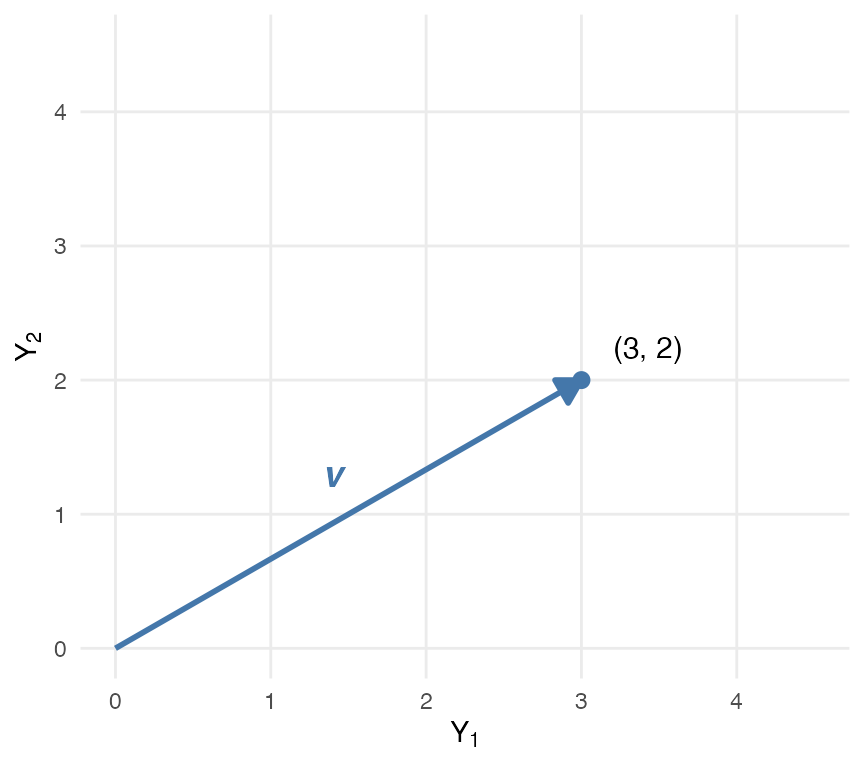
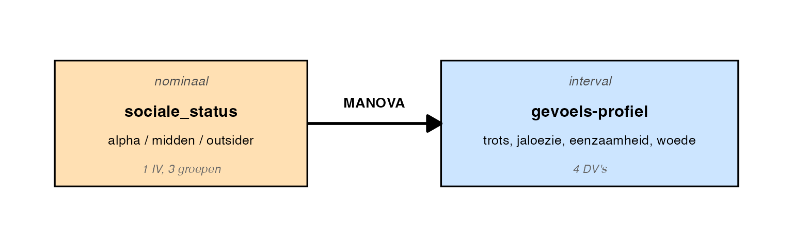
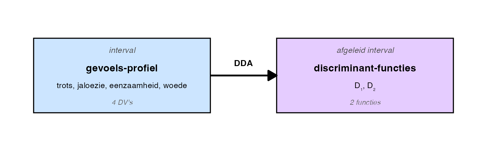
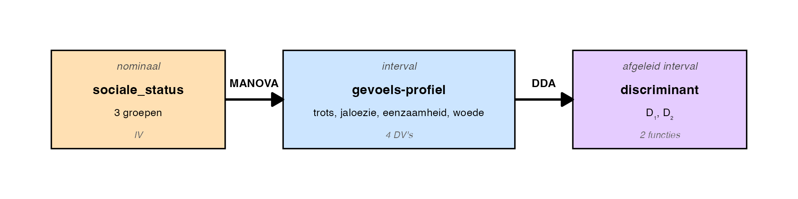
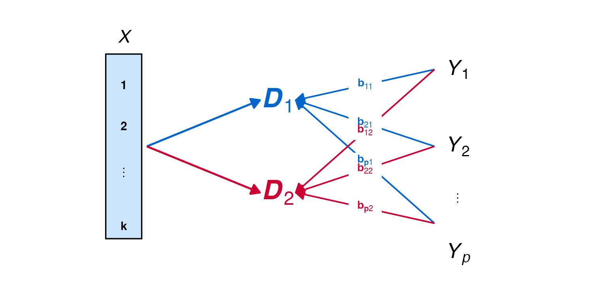
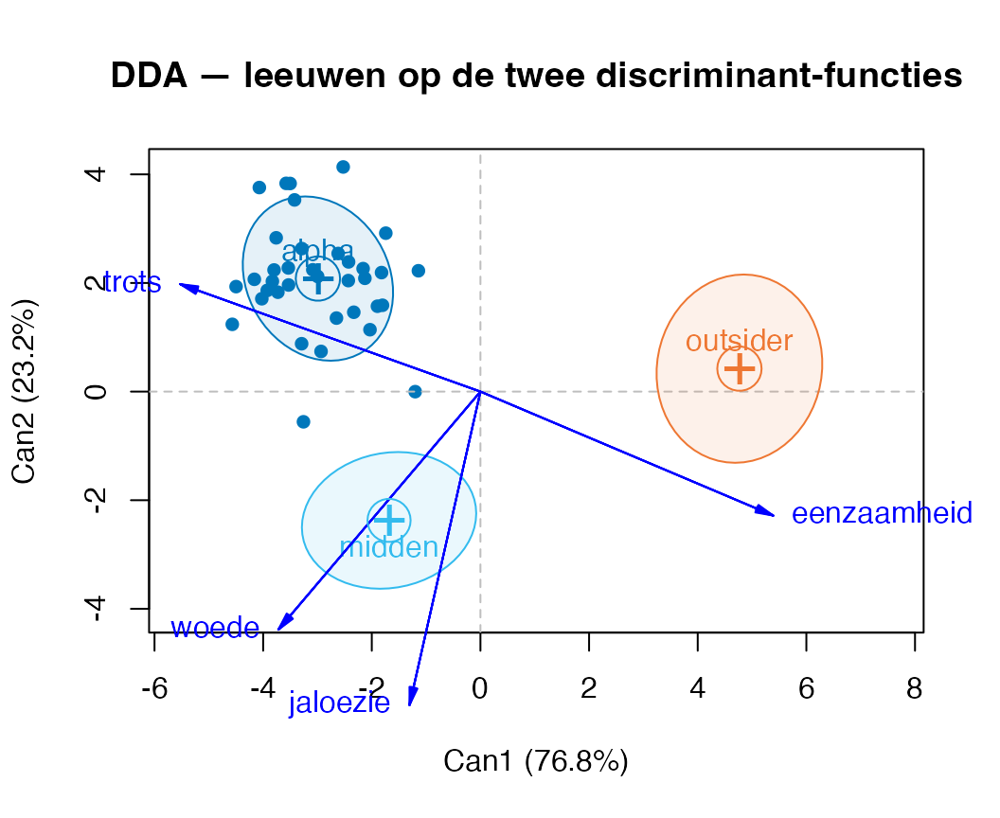
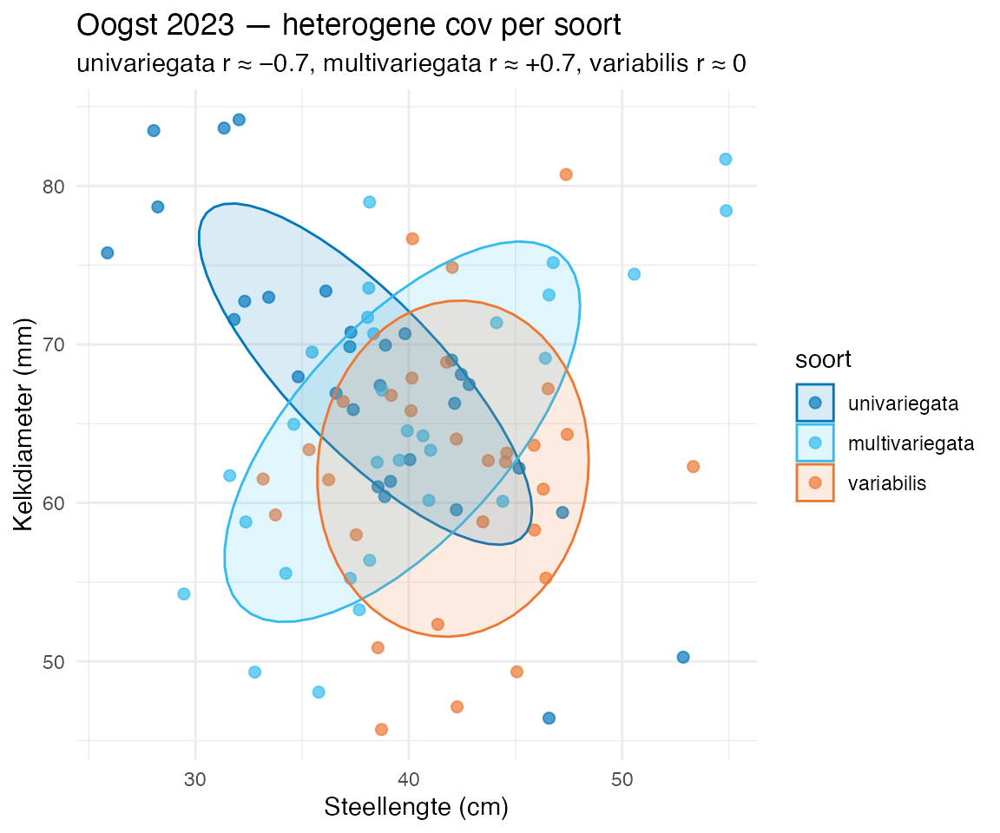
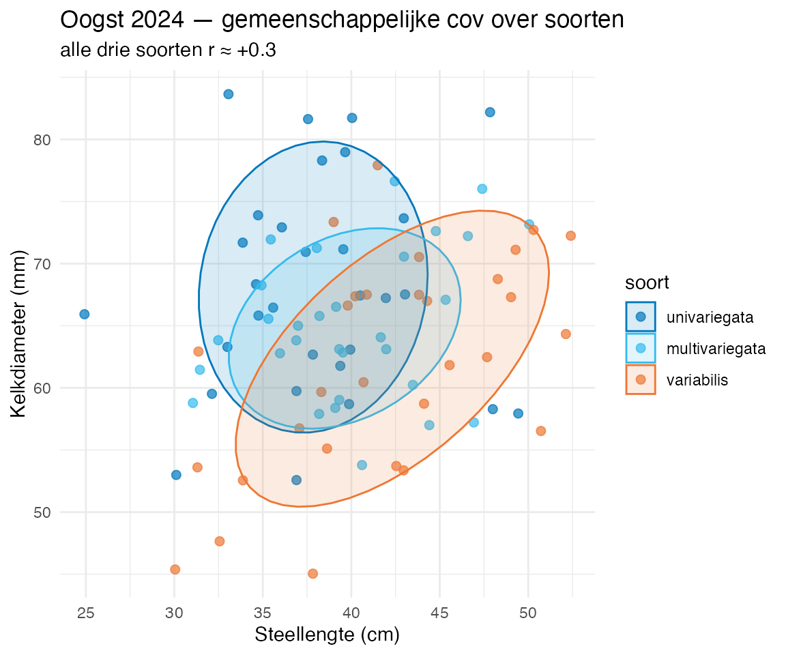

De leeuw lag op een rotsplateau en keek over zijn troep.
“Een leeuw voelt nooit één ding tegelijk,” zei hij. “Trots, jaloezie, eenzaamheid, woede — die lopen door elkaar. Wie ze los toetst, mist de leeuw.”
Honderdtien leeuwen, vier gevoelens per dier. Per leeuw noteerde hij trots, jaloezie, eenzaamheid en woede (elk op een \(0\)-\(100\) schaal), plus zijn sociale_status in de troep (alpha, middenrang, outsider). Vraag: verschilt het gevoels-profiel tussen statusgroepen — niet één gevoel apart, maar de vier samen?
De techniek heet multivariate analysis of varianceMANOVA.
Hehe, eindelijk multivariaat.
Vier weken lang werkten we met één \(Y\) tegelijk. MRA: één voorspelde uitkomst. ANOVA: één gemiddelde over groepen. ANCOVA: één DV met een covariaat. LRA: één binaire \(Y\). Voor elke vraag een keurig opgeschoonde projectie naar één afhankelijke variabele — alsof de wereld zich zo netjes in losse\(Y\)’s laat ontleden.
Maar één leeuw voelt niet drie keer apart-iets. Een mens met depressie heeft slaap-, eet-, energie- én moed-problemen tegelijk, en die hangen samen. Een opleiding met goede docenten heeft vaak ook goede roosters en goede gebouwen. Honderden variabelen zijn er in toegepast werk — en veel ervan zeggen ongeveer hetzelfde. Multivariate analyse begint precies waar je dat erkent: je gooit niet je honderd metingen los over de tafel, je reduceert ze tot een paar zinvolle gewogen optellingen (de \(D\)’s die nog komen) die het hele profiel vangen. Vanaf hier mag het.
Bij MANOVA werk je in vier stappen — Leiden noemt het “Protected F in three steps, plus een preliminary”:
Klopt het allemaal wel? (preliminary) — multivariate normaliteit, gelijke covariantie-matrices (Box’s M), groepsgrootte-balans, geen extreme outliers, multicollineariteit tussen DV’s. Eerst checken, dan rekenen.
Voorspelt het samen iets? — de multivariate \(F\)-toets (Pillai’s trace en varianten) op het gezamenlijke effect van de factor over alle DV’s.
Welke DV’s dragen bij? — univariate \(F\) per DV, met Bonferroni- of Holm-Bonferroni-correctie op \(\alpha\).
Tussen welke groepen op die DV? — pairwise comparisons (Tukey HSD), bij \(I\) groepen zijn dat \(I(I-1)/2\) paren. Voor onze drie statusgroepen: drie paren (alpha–mid, alpha–outsider, mid–outsider).
NoteA. Wat is MANOVA?
MANOVA test of meerdere uitkomsten tegelijk verschillen tussen groepen — multivariate ANOVA. Tot nu toe was er één afhankelijke variabele \(Y\); bij MANOVA zijn er meerdere (\(Y_1, Y_2, \ldots, Y_p\)) die je gezamenlijk vergelijkt.
Waarom multivariate? (1) Sommige constructen zijn meerdimensionaal (stemming = trots + jaloezie + eenzaamheid + woede; intelligentie = verbal + spatial + numeric). (2) Correlaties tussen DV’s bevatten zelf informatie. (3) Eén multivariate test is krachtiger en houdt de family-wise error rate FWER beter onder controle dan meerdere ANOVA’s los van elkaar.
De H₀ in twee niveaus
Het slimme aan MANOVA is dat de \(H_0\) eigenlijk twee stellingen tegelijk toetst.
Stelling A — per DV zijn de groepsgemiddelden gelijk. Per variabele \(j\) schrijf je dat uit als één rijtje:
\[\mu_{j,1} = \mu_{j,2} = \ldots = \mu_{j,I}\]
waar \(\mu_{j,g}\) het gemiddelde is van variabele \(j\) in groep \(g\) (Leiden-conventie: eerste index = positie-binnen-set, tweede index = groep). Bij \(p\) DV’s krijg je \(p\) van die rijtjes, één per variabele. Dit is wat \(p\) losse univariate ANOVA’s afzonderlijk toetsen.
Kleine noot: in informele uitleg laten de collegesheets subscripts soms weg (“alle gemiddelden gelijk”). Wij houden ze er altijd bij — kost één teken, levert helderheid op.
Stelling B — voor élke manier waarop je de DV’s met gewichten optelt, is de gemiddelde uitkomst over groepen gelijk. Concreter: kies een willekeurige gewichten-vector, bijvoorbeeld \(\mathbf{w} = (3, 1, -2)\). Bereken voor élke leeuw \(D = 3 \cdot \text{trots} + 1 \cdot \text{jaloezie} - 2 \cdot \text{eenzaamheid}\) — één \(D\)-score per leeuw. Dan moet onder stelling B gelden: \(\bar{D}_{\text{alpha}} = \bar{D}_{\text{middenrang}} = \bar{D}_{\text{outsider}}\). En dat moet gelden voor elke keuze van gewichten, niet alleen deze.
De gezamenlijke \(H_0\) is: stelling A én stelling B zijn beide waar.
Drie scenario’s voor H₁
Als \(H_0\) verworpen wordt, kan dat op drie manieren:
Alleen A niet waar — minstens één DV verschilt univariaat over de groepen.
Alleen B niet waar — élke afzonderlijke DV is over groepen gelijk in gemiddelde, en tóch scheidt een lineaire combinatie de groepen. Dit klinkt vreemd, maar gebeurt: de correlatie-structuur tussen DV’s verschilt over groepen, en een gewogen optelling vangt dat op.
A én B niet waar — minstens één DV verschilt en minstens één lineaire combinatie ook.
Belangrijk: stelling A waar betekent niet automatisch stelling B waar. Dat is precies waarom MANOVA niet hetzelfde is als \(p\) losse ANOVA’s. Bij opgave 5.2 zie je twee datasets met identieke groepsgemiddelden waar het multivariate antwoord tóch verschilt — bewijs dat gemiddelden ≠ combinatie van gemiddelden.
NoteStrikte notatie — voor wie verder wil
De Leiden-collegesheets schrijven de \(H_0\) uit per variabele, zoals hierboven — dat is wat je voor tentamen herkent en kunt reproduceren. In tekstboeken (Stevens, Tabachnick & Fidell, Field) zie je een compactere notatie met vectors:
waar \(\boldsymbol{\mu}_g\) de vector van \(p\) DV-gemiddelden in groep \(g\) is — alle rijtjes van stelling A samengevat in één regel. Stelling B krijgt dan:
Dezelfde stelling, andere schrijfwijze. Handig om te herkennen in journals en methoden-boeken; niet nodig om uit het hoofd te leren voor MVDA-tentamen. We houden het in de hoofdtekst gezellig in losse rijtjes.
NoteB. De vier teststatistics
Bij MANOVA bestaan vier multivariate teststatistieken. Allemaal worden ze omgezet naar een \(F\)-approximatie waarop je een \(p\)-waarde leest. Standaard rapporteer je Pillai’s trace als primary; de andere drie ter controle.
Statistic
Symbool
Range
Richting
Voorkeur bij
Wilks’ Lambda
\(\Lambda\)
\(0\) tot \(1\)
lager = sterker effect(tegenovergesteld aan \(F\))
klassieke conventie; gelijke covariantie-matrices
Pillai’s trace
\(V\)
\(0\) tot \(\min(I-1, p)\)
hoger = sterker
moderne standaard, meest robuust tegen schendingen
Hotelling-Lawley trace
\(T^2\)
\(0\) tot \(\infty\)
hoger = sterker
hoogste power bij grote effecten + kleine sample
Roy’s largest root
\(\theta\)
\(0\) tot \(1\)
hoger = sterker
kan misleidend zijn (alleen op grootste eigenvalue)
In R: summary(res_Manova, multivariate = TRUE) geeft alle vier. Bij grote effecten zeggen ze meestal hetzelfde; bij borderline kan het verschillen — dan is Pillai het veiligst.
Let op de Wilks-richting: \(\Lambda\) is een ratio van error-variantie tot totale variantie. Klein \(\Lambda\) = weinig error relatief tot totaal = sterk discriminerend. Tegenovergesteld aan hoe \(F\), \(V\), \(T^2\) en \(\theta\) werken (waar hoger = sterker). SPSS-tijd-veteranen wisten dit uit hun hoofd; in R is het soms even schakelen. De \(p\)-waarde zelf is wél altijd “lager = significanter” — zoals overal.
NoteC. De leeuw voelt nooit één ding tegelijk
Een leeuw kan tegelijk trots zijn op zijn pluk-en-tand, jaloers op een rivaal, eenzaam in zijn rust, en woedend over een grensovertreding. Vier gevoelens, niet onafhankelijk: jaloezie kan woede aanwakkeren, eenzaamheid kan trots ondermijnen, en alpha’s voelen anders dan middenrangers of outsiders. Een aparte ANOVA per gevoel mist die samenhang.
MANOVA pakt het hele gevoels-spectrum tegelijk: zien sociale alpha’s, middenrangers en outsiders andere patronen over deze vier dimensies samen? Niet “verschilt trots”, maar “verschilt het gevoels-profiel als geheel”. Pas als die multivariate vraag bevestigend beantwoord wordt, ga je per DV verder kijken.
TipTussendoor — drie statusgroepen, of drie hechtingsstijlen met manen?
Een leeuw is geen mens, maar het is verleidelijk. Sociale alpha lijkt op wat hechtings-theoretici secure noemen: bovenaan de hiërarchie, gerust in eigen kunnen, mist ’m soms zijn moeder maar bekent het niet hardop. De middenrang zit dichter bij anxious-resistant: kijkt voortdurend omhoog naar de alpha en omlaag naar de outsider, hangt en klampt aan rangorde. De outsider doet avoidant: houdt afstand, lijkt onverschillig, voelt het wel.
Voor MANOVA-doeleinden gaat het hier om drie groepen met drie gevoelens als DV. Voor wie nieuwsgierig is naar de echte theorie: Bowlby (1969) is de pionier, Ainsworth (1970s, Strange Situation) deed de empirische uitwerking. Latere lijn loopt via Hazan & Shaver naar het moderne tweedimensionale model — avoidance × anxiety, Brennan-Clark-Shaver ECR. Bij opgave 5.2 komt die theorie terug als hoofd-cast met echte hechtings-dimensies; hier is het een knipoog.
NoteTussenstap — wat doe je met drie scores per leeuw?
Stel je voor: je moet een collega vertellen hoe een leeuw zich voelt. Drie scores per leeuw — trots, jaloezie, eenzaamheid — oplepelen voor élke leeuw is onoverzichtelijk. Bij honderdtien leeuwen wordt het driehonderddertig getallen die niemand meer overziet.
Dan maar even terugbrengen tot één getal per leeuw. Een gewogen optelling: \[D = w_1 \cdot \text{trots} + w_2 \cdot \text{jaloezie} + w_3 \cdot \text{eenzaamheid}\]
De gewichten \((w_1, w_2, w_3)\) kies je zelf, omdat het mag. We gaan twee verschillende keuzes proberen en kijken wat er gebeurt. Eerste keuze: \(\mathbf{w}_1 = (4, 1, 2)\). De uitkomst per groep noemen we \(D_{1, g}\) — eerste index = gewichten-vector-nummer (consistent met Leiden’s \(\mu_{j,k}\)-conventie: positie-binnen-set eerst, groep tweede):
Onder gewichten-vector \(\mathbf{w}_1\) scoort alpha het hoogst, midden tweede, outsider laagst. Logisch: \(\mathbf{w}_1\) legt de meeste nadruk op trots (gewicht \(4\)), en alpha is daar de duidelijke koploper.
Maar we hadden de gewichten ook anders kunnen kiezen. Tweede keuze: \(\mathbf{w}_2 = (1, 4, 2)\). Uitkomst per groep is \(D_{2, g}\):
Onder \(\mathbf{w}_2\) scoort opeens midden het hoogst, outsider tweede, alpha laatst. De ranking is omgedraaid. Dezelfde drie groepen, dezelfde gemiddelden, andere gewichten — andere conclusie. Met \(\mathbf{w}_2\) ligt de nadruk op jaloezie (gewicht \(4\)), en daar is midden het sterkst.
Dat is precies waar MANOVA over gaat. Niet één gewichten-vector kiezen, maar alle mogelijke gewichten-vectoren tegelijk doortesten en kijken of er ergens een combinatie is waarin de groepen verschillen. Dat is stelling B uit callout A. Een gewogen optelling waarbij de groepen écht verschillen, heet later — als we hem door de data laten kiezen in plaats van zelf — een discriminant-functie. Daar komen we in 5.2 op terug.
TipSjonge sjonge — al die woorden voor één ding
In dit hoofdstuk en in latere thema’s kom je een rits termen tegen die allemaal hetzelfde gereedschap aanwijzen. Een paar:
Term
Waar je ’m tegenkomt
gewogen optelling
hier, didactische ingang
lineaire combinatie
de wiskundige naam; ook in vector-context
som van producten
zo lees je het bij hand-rekenen
composite score
psychometrie, als items tot een schaal-score worden samengevoegd
schaalscore / itemtotaalscore
toegepast (vragenlijsten)
contrast
speciaal geval: gewichten tellen op tot \(0\) — dan meet je een verschil i.p.v. een totaal
discriminant-functie / discriminant-score
in DDA (sectie 5.2), als de data zelf de gewichten kiest
(canonical) variate / functie-variaat
zelfde ding in MANOVA- en kanonische-correlatie-context
projectie
wiskundig: pijl-op-as
weighted sum
Engelse tekstboeken
Onder de motorkap is het allemaal dezelfde operatie: pak het rijtje scores van één leeuw (één persoon, één geval), vermenigvuldig elke score met een eigen gewicht, tel ze op, krijg één getal terug. Dat getal heet gewogen optelling als jij de gewichten verzint, discriminant-functie als MANOVA ze voor je kiest, contrast als je gewichten optellen tot nul, composite score als jij vragenlijst-items optelt tot een schaal. Verschillende contexten, verschillende namen, één gereedschap.
Als jij straks “discriminant-functie” leest of “canonical variate”, denk: “dat is gewoon een gewogen optelling, andere achternaam.” Zodra je dat verbindt, valt een aantal kwartjes tegelijk. Sjonge.
TipTussenuit — wat is een vector eigenlijk?
Toen we zeiden “gewichten \((w_1, w_2, w_3)\)”, was dat al een vector — een rijtje van getallen onder elkaar geschreven. Compact:
Vet gedrukt symbool \(\mathbf{w}\) zegt: dit is geen los getal, dit is een rijtje. Bij twee getallen onder elkaar kun je het tekenen — als pijl uit de oorsprong naar een punt op een assenkruis.
Toon code (pijl-illustratie)
library(ggplot2)ggplot() +geom_segment(aes(x =0, y =0, xend =3, yend =2),arrow =arrow(length =unit(0.35, "cm"), type ="closed"),linewidth =1, colour ="#4477AA") +geom_point(aes(x =3, y =2), size =2.5, colour ="#4477AA") +annotate("text", x =3.2, y =2.25, label ="(3, 2)",hjust =0, size =4) +annotate("text", x =1.4, y =1.3, label ="v",fontface ="bold.italic", size =5, colour ="#4477AA") +coord_cartesian(xlim =c(0, 4.5), ylim =c(0, 4.5)) +scale_x_continuous(breaks =0:4) +scale_y_continuous(breaks =0:4) +labs(x =expression(Y[1]), y =expression(Y[2])) +theme_minimal(base_size =11) +theme(panel.grid.minor =element_blank())

De pijl heeft een richting (waar wijst-ie?) en een lengte (hoe ver kom je?) — allebei samengevat in de twee getallen \((3, 2)\). Drie naar rechts, twee omhoog.
Bij twee DV’s kun je de gemiddelden van een groep tekenen als zo’n pijl: van de oorsprong naar het punt \((\bar{Y}_{1g}, \bar{Y}_{2g})\). Voor élke groep een eigen pijl. Wijzen ze allemaal in dezelfde richting en zijn ze even lang? Dan multivariaat geen verschil. Wijken ze af in richting of lengte? Dan zit er ergens een verschil in het gemiddelden-profiel.
De Leiden-collegesheets gebruiken deze vector-notatie sporadisch — bij stelling B in de strikte schrijfwijze. Voor tentamen hoeft het niet uit het hoofd. Handig om te herkennen wanneer je het tegenkomt. Bij opgave 5.2 komen we erop terug met echte data-pijlen — daar zie je hoe twee datasets met dezelfde groepsgemiddelden tóch verschillende pijl-patronen kunnen hebben (en dat is precies waarom MANOVA niet hetzelfde is als per-DV-ANOVA’s).
NoteDe boomstructuur — vier-stappen-flow op een compact voorbeeld
Drie groepen (\(A\), \(B\), \(C\)), twee DV’s (\(Y_1\), \(Y_2\)). Hoe loopt de MANOVA-procedure door?
flowchart TD
S0["**Stap 0** — Assumpties checken<br/>Box's M, MV-normaliteit, n-balans"]
S1{"**Stap 1** — Multivariate F<br/>Pillai's trace"}
Stop1["**STOP** — geen verschil"]
S2{"**Stap 2** — Univariate F per DV<br/>Bonferroni α = .05/2 = .025"}
Y1sig{"Y₁ significant?"}
Y2sig{"Y₂ significant?"}
S3a["**Stap 3 voor Y₁** — Tukey HSD<br/>3 paren: A-B, A-C, B-C"]
S3b["**Stap 3 voor Y₂** — Tukey HSD<br/>3 paren: A-B, A-C, B-C"]
Klaar1["klaar voor Y₁"]
Klaar2["klaar voor Y₂"]
S0 --> S1
S1 -- niet sig --> Stop1
S1 -- significant --> S2
S2 --> Y1sig
S2 --> Y2sig
Y1sig -- ja --> S3a
Y1sig -- nee --> Klaar1
Y2sig -- ja --> S3b
Y2sig -- nee --> Klaar2
Lees van boven naar beneden. Stap 0 staat los — die check je vóór het rekenen, niet in de inferentie-keten. De inhoudelijke kern is de driehoek \(1 \to 2 \to 3\). Bij stap 1 nee zit je klaar zonder enige univariate uitspraak; bij stap 1 ja loopt het via stap 2 (per DV met Bonferroni-correctie) naar stap 3 (alleen op DV’s die in stap 2 nog significant zijn).
NoteVraag T-vooraf — Hoe ziet deze boom eruit bij 4 groepen en 6 DV’s?
Zelfde vier stappen, maar de takken breder. Twee dingen veranderen:
Bij stap 2: Bonferroni-grens wordt \(\alpha = .05/6 = .0083\) (zes DV’s in plaats van twee).
Bij stap 3: per significante DV \(4 \cdot 3/2 = 6\) pairwise comparisons (in plaats van 3).
Probeer zelf de boom te schetsen — zonder zes aparte takken vol te tekenen mag je “per DV in stap 2: zie subboom” schrijven. Het patroon blijft hetzelfde.
NoteMANOVA en DDA in sets met pijlen — eerst los, dan samen
Een tweede manier om de techniek vast te leggen: sets met pijlen ertussen. Per set een rechthoek (meetniveau bovenin, variabel-namen in vet, aantal onder); pijl met techniek-label tussen de sets.
Eerst MANOVA alleen — wat doet de techniek?
Warning: The `label.size` argument of `geom_label()` is deprecated as of ggplot2 3.5.0.
ℹ Please use the `linewidth` argument instead.

Eén nominale IV op de drie continue DV’s tegelijk — de multivariate \(F\) vraagt of er ergens in dat gevoels-profiel een groeps-verschil zit (stelling A of B uit callout A).
Dan DDA alleen — wat doet die in 5.2?

DDA vertrekt vanuit de DV’s en maakt er een kleiner aantal gewogen optellingen van — de discriminant-functies \(D_1, D_2, \ldots\). De pijl wijst dus de andere kant op: niet “groepen voorspellen DV’s” maar “DV’s worden samengevouwen tot een paar dimensies die groepen scheiden”. Bij DDA staat de pijl omgekeerd ten opzichte van MANOVA.
Allebei samen — zo passen ze:

MANOVA test óf er ergens een verschil zit in het gevoels-profiel. DDA vouwt het profiel daarna samen tot één of twee dimensies waarop het verschil het meest zichtbaar is. “Waar MANOVA stopt, daar gaat DDA verder” — zoals je het in 5.2 zelf zal ervaren.
Dezelfde set-pijl-stijl gebruiken we straks ook in andere thema’s (MRA, ANCOVA, LRA, RMA, Mediation) — herken het als overzicht-conventie.
NoteHoe dit hoofdstuk leest
Dit hoofdstuk volgt dezelfde drie-laagse structuur als thema 1, 2, 3 en 4:
Verhaal-frame — wat de leeuw doet of denkt.
Algemene vorm — abstract, statistiek-Latijn met Y1, Y2, Y3, factor, mijn_data.
Voor onze dieren — uitvoerend, met # hekjes en concrete namen.
Plus de antwoorden in zacht groen (collapse), vragen in indigo, leesregels in mauve, alarm in oranje, don’ts in rood. T-vragen vlechten zich tussen de hoofdvragen door om je rekenintuïtie te oefenen.
NoteWaarom lm() + Manova() in plaats van manova()?
R kent een base-functie manova() die direct werkt, maar standaard Type-I sums of squares gebruikt. car::Manova() op een lm-object met type = 3 geeft Type-III SS — past beter bij factorial designs met onbalans en is consistent met onze ANOVA-aanpak in thema 2 en 3 (zie de contr.sum callout daar). Eerst lm(cbind(...) ~ factor) voor het multivariate lineair model, dán Manova() op dat object.
Notatie — symbolen voor MANOVA
NoteSleutelsymbolen in dit hoofdstuk
In dit werkboek zie je telkens dezelfde notatie:
\(\boldsymbol{\mu}_i\) — vector van DV-gemiddelden in groep \(i\). Bij drie DV’s: \(\boldsymbol{\mu}_i = (\mu_{i,1}, \mu_{i,2}, \mu_{i,3})^\top\).
\(V\) — Pillai’s trace: som van eigenvalues van \(\boldsymbol{H}(\boldsymbol{H}+\boldsymbol{E})^{-1}\).
\(T^2\) — Hotelling-Lawley trace: som van eigenvalues van \(\boldsymbol{HE}^{-1}\).
\(\theta\) — Roy’s largest root: grootste eigenvalue van \(\boldsymbol{HE}^{-1}\).
\(F\) — APA-italic, hier als \(F\)-approximatie bij elk van de vier teststatistics.
\(df_H\) — hypothesis \(df\). Voor één-weg MANOVA: \(df_H = I - 1\) (aantal niveaus minus één).
\(df_E\) — error \(df\). Variant per teststatistic; \(df_E\) in de \(F\)-approximatie.
\(p\) — \(p\)-waarde van de \(F\)-approximatie.
\(N\) — totale steekproef-grootte.
Voor inferentie spreek je over de populatie-vector \(\boldsymbol{\mu}_i^*\) (asterisk-notatie); voor rapportage over de steekproef-vector \(\bar{\boldsymbol{Y}}_i\). APA-italic geldt voor enkele Latijnse symbolen (\(F\), \(t\), \(p\), \(r\), \(N\), \(df\)); multi-letter symbolen rechtop (\(\text{MANOVA}\), \(\text{MS}\), \(\text{Pillai}\), \(\text{SSCP}\)).
TipVuistregels zijn afspraken, geen wetten
De drempels in dit werkboek zijn breed gangbare conventies — niet universeel:
Cel-grootte: \(n_i \geq 20\) per groep is een gangbare richtlijn — bij grotere balans is de \(F\)-approximatie robuust tegen lichte normaliteit-schendingen. Bij \(n_i < 10\) wordt MANOVA onbetrouwbaar.
Aantal DV’s: \(p < I\) wordt aanbevolen (minder DV’s dan groepen plus iets), om identificatie-problemen te voorkomen.
Box’s M: standaard \(\alpha\) voor Box’s M is \(.001\), niet \(.05\). De toets is bekend overgevoelig — bij \(\alpha = .05\) verwerpt hij vrijwel altijd. Vandaar deze strenge drempel.
Welke teststatistic: bij gelijke groepen en moderate samples zijn alle vier ongeveer gelijk; bij twijfel of ongelijke covariantie-matrices is Pillai het veiligst.
Bonferroni voor follow-up: \(\alpha_{\text{per DV}} = .05/p\). Bij \(p = 3\) DV’s: \(.05/3 \approx .017\). Strenger dan unprotected ANOVA’s.
Effectgrootte multivariaat: partiële \(\eta^2\) per DV (univariaat) plus de Pillai-waarde zelf als multivariate effectgrootte. Pillai \(\geq .14\) is een groot multivariaat effect (Cohen-conventie).
MANOVA \(F\)-robuustheid: bij gebalanceerde celgroottes en \(n_i \geq 20\) is de \(F\)-approximatie robuust tegen normaliteit- en covariantie-matrix-schendingen. Onbalans + \(n_{\max}/n_{\min} > 1.5\) + Box’s M \(p < .001\) samen is wel een rood vlaggetje.
Verschillende vakgroepen, docenten en handboeken kiezen iets andere drempels. Als je voor een tentamen of opdracht werkt, check altijd in je eigen college-sheets welke drempels je docent of vakgroep hanteert. Wij volgen hier consistent één set, maar dat is een keuze, geen natuurwet.
NoteCode in dit hoofdstuk — wat moet je kunnen typen?
Code is standaard open als je hem moet kunnen typen op het R-practical-tentamen: lm(cbind(Y1, Y2, Y3) ~ factor), Manova(., type = 3), summary(., multivariate = TRUE, univariate = TRUE), box_m(), summary.aov(), p.adjust(), TukeyHSD(aov(...)). Code die alleen ter illustratie dient — verkenning, plot-decoratie, DDA-tabel met gt, biplot — staat ingeklapt met een knopje “Toon code”. Klap hem open als je nieuwsgierig bent; voor het tentamen hoef je hem niet te reproduceren.
5.0 Project- en datavoorbereiding
Aantekeningen netjes, paden kloppen
Open de meegestuurde projectmap (05_multivariate_variantieanalyse/) en dubbelklik op 05_multivariate_variantieanalyse.Rproj. Daarmee staat je werkomgeving klaar: paden kloppen, RStudio kent de juiste werkmap. De data ligt al in data/, de helper-functies in functions/. Niets te installeren als de pakketten (car, tidyverse, rstatix, candisc) op je computer staan; anders één keer:
Per leeuw vier waarden: sociale_status (factor: alpha / middenrang / outsider), en drie gevoelens — trots, jaloezie, eenzaamheid (elk continu, schaal \(0\)-\(100\)). De drie DV’s vormen samen het gevoels-profiel.
NoteDrie DV’s of drie aparte ANOVA’s? Het multivariate alternatief
Je zou drie aparte ANOVA’s kunnen runnen — één voor trots, één voor jaloezie, één voor eenzaamheid. Wat is daar mis mee?
FWER inflation: bij \(\alpha = .05\) per ANOVA en drie onafhankelijke toetsen wordt de kans op minstens één type-I-fout \(1 - (1-.05)^3 \approx .143\) — bijna \(14\%\). Bonferroni-correctie (\(\alpha = .017\) per toets) repareert dit, maar verliest power.
Geen gebruik van DV-correlaties: de drie gevoelens hangen samen; die samenhang draagt informatie. MANOVA gebruikt de gezamenlijke covariantie-structuur.
Eén multivariate hypothese: “verschilt het gevoels-profiel?” is conceptueel één vraag. Drie aparte ANOVA’s beantwoorden drie vragen.
Vandaar de volgorde: eerst MANOVA (multivariate \(F\), één hypothese), pas bij significantie univariate follow-up met Bonferroni — de zogenoemde protected F-route. Als de multivariate \(F\) niet significant is, stop je: je hebt geen bewijs voor profiel-verschil, dus losse DV-toetsen zijn dan niet meer geloofwaardig.
5.1 Het MANOVA-model fitten en interpreteren
Drie gevoelens tegelijk, één hypothese
“Trots, jaloezie, eenzaamheid,” mompelde de leeuw. “Als ik ze los toets, mis ik het patroon. Als ik ze samen toets, vraag ik of de troep echt drie gevoels-werelden bewoont.”
NoteVoor je gaat rekenen — zes vragen aan jezelf
Het stappenplan, opnieuw, met de techniek-keuze als laatste stap.
Wie of wat wordt er gemeten?De leeuw heeft \(110\) leeuwen genoteerd.
Wat wordt er gemeten?Vier variabelen per leeuw: sociale_status, trots, jaloezie, eenzaamheid.
Onafhankelijk of afhankelijk?Onderzoeksvraag: voorspelt sociale_status het gevoels-profiel? Dan zijn trots, jaloezie, eenzaamheid afhankelijk (\(Y_1, Y_2, Y_3\)), en sociale_status onafhankelijk (factor).
Welke factor(en) en hoeveel niveaus?Eén factor (sociale_status) met drie niveaus (alpha, middenrang, outsider) — dus eenwegs-MANOVA. Bij twee factoren had het tweewegs-MANOVA geheten (zie 5.A factorial); bij drie factoren drieweg, enzovoort.
Meetniveau van elke variabele?Sociale_status nominaal (\(3\) niveaus), drie DV’s interval (\(0\)-\(100\)).
Welke techniek? Doorloop de beslisboom:
flowchart TD
A[Hoeveel afhankelijke<br/>variabelen?] -->|één| B[Y meetniveau?]
A -->|meerdere<br/>continue| Z[MANOVA<br/><i>dit thema</i>]
B -->|interval| C[X-en meetniveau?]
B -->|binair| D[Logistic regression<br/><i>thema 4</i>]
C -->|alleen interval| E[Multiple regression<br/><i>thema 1</i>]
C -->|alleen nominaal| F[ANOVA<br/><i>thema 2</i>]
C -->|gemengd| G[ANCOVA<br/><i>thema 3</i>]
style Z fill:#faf3e2,stroke:#c9a05a,stroke-width:2px
NoteBens pijltjes-overzicht — alle MVDA-technieken in één tabel
Dezelfde keuze, anders genoteerd. Lees als predictor(en) (meetniveau) → DV(s) (meetniveau):
#
Predictor(en)
DV(s)
Techniek
dich |X|
|Y| int
\(t\)-toets
nom 3+lvl |X|
|Y| int
éénweg ANOVA
1
int |X X …|
|Y| int
MRA — thema 1
2
nom |X X|
|Y| int
factorial ANOVA — thema 2
3
nom + int |X C|
|Y| int
ANCOVA — thema 3
4
bo(in) |X|
|Y| bin
LRA — thema 4
5
nom |X|
|Y₁ Y₂ …| int
MANOVA — thema 5
6
within-subject momenten
|Y₁ Y₂ Y₃ Y₄| int
RMA — thema 6
7
indirect via \(M\)
\(X \to M \to Y\) pad
Mediation — thema 7
Drie continue \(Y\)’s, één factor \(X\). Het aantal DV’s is wat de techniek bepaalt — de mix van DV-meetniveaus moet wel uniform interval zijn (geen mengsels van interval en nominaal als DV). Antwoord: MANOVA.
T1 — Techniek-keuze: MANOVA, ANOVA, ANCOVA of LRA?
NoteVraag T1 — Pen-en-papier
Voor elk vignet: bepaal afhankelijke variabele(n), meetniveau van elke voorspeller, en kies dan de techniek.
a)Een orka onderzoekt of drie pod-types (familiepod / mannenpod / mengpod) verschillen op vier emotionele dimensies samen: rust, opwinding, zorgzaamheid en agressie — alle continu.
b)Een gezondheidspsycholoog meet of stress-niveau (continu) verschilt tussen vier therapie-types (factor) na correctie voor leeftijd (continu). Bij \(200\) cliënten.
c)Een onderwijskundige registreert per student of een tentamen wordt gehaald (ja/nee), met als voorspeller aantal studie-uren-per-week (continu). Bij \(300\) studenten.
d)Een uil vergelijkt drie jachtperioden (factor, 3 niveaus) op het aantal succesvolle vluchten per nacht (continu).
CautionAntwoord T1 — open na je eigen poging
a) Vier continue DV’s (rust, opwinding, zorgzaamheid, agressie), één factor (pod-type, \(3\) niveaus). \(\Rightarrow\)MANOVA.
b) Eén continue \(Y\) (stress-niveau), één factor + één continue covariaat. \(\Rightarrow\)ANCOVA (thema 3).
c) Eén binair \(Y\) (tentamen-gehaald ja/nee), één continue \(X\). \(\Rightarrow\)logistische regressie (thema 4).
Vuistregel.Aantal DV’s bepaalt of het MANOVA wordt. Eén continue DV + factor(en) + (eventueel) covariaat = ANOVA-familie. Meerdere continue DV’s tegelijk + factor = MANOVA. Binair \(Y\) blijft LRA, ongeacht aantal voorspellers.
T2 — Waarom multivariaat in plaats van \(p\) aparte ANOVA’s?
NoteVraag T2 — Pen-en-papier
Een onderzoeker heeft drie continue DV’s en één factor met drie niveaus. Hij overweegt drie aparte eenweg-ANOVA’s in plaats van één MANOVA.
a) Bij \(\alpha = .05\) per ANOVA en drie aparte ANOVA’s: hoe groot is de family-wise type-I-fout?
b) Welke informatie bevat een MANOVA dat drie ANOVA’s missen?
c) Wanneer mag je tóch drie aparte ANOVA’s runnen? (Hint: na een significante MANOVA, met Bonferroni-correctie.)
d) Wat als de drie DV’s onderling sterk correleren (\(r > .8\))? Verandert dat het advies?
CautionAntwoord T2 — open na je eigen poging
a)\(1 - (1 - .05)^3 = 1 - .857 = .143\) — ruim \(14\%\) kans op minstens één vals-positief, ongeveer drie keer zo hoog als de nominale \(.05\).
b) De correlatie-structuur tussen de DV’s. Een MANOVA leest dat de drie DV’s samen een patroon vormen — bv. dat alpha’s tegelijk hoog op trots en laag op eenzaamheid scoren. Drie ANOVA’s missen dat samen-patroon.
c) Na een significante multivariate \(F\)-toets: dan rapporteer je univariate \(F\)’s als follow-up, met Bonferroni-correctie (\(\alpha_{\text{per DV}} = .05/p\)). Dit heet de protected F-route: de eerste-fase MANOVA “beschermt” je tegen het opgepompte alpha-niveau.
d) Bij hele hoge DV-correlatie wordt MANOVA juist minder informatief — als \(r > .9\) is het bijna één variabele en heb je geen multivariate winst meer. Vuistregel: bij DV-correlaties tussen \(.20\) en \(.70\) heeft MANOVA echte meerwaarde. Bij multicollineaire DV’s overweeg je liever principal components of een gewogen som als enkele DV.
Inzicht. MANOVA is geen “betere” ANOVA — het is een ander type vraag (gezamenlijk profiel) met andere aannames (multivariate normaliteit, gelijke covariantie-matrices) en eigen interpretatie.
5.1.a Verkenning — DV-means per groep en correlatiematrix
Voordat de leeuw fit, kijkt hij eerst.
Algemene vorm.
# Gemiddelden per groep voor elke DV.aggregate(cbind(Y1, Y2, Y3, Y4) ~ factor, data = mijn_data, FUN = mean)# Correlatiematrix tussen de DV's.cor(mijn_data[, c("Y1", "Y2", "Y3", "Y4")])# Boxplot per DV.boxplot(Y1 ~ factor, data = mijn_data)
Voor onze dieren.
# Gemiddelden per groep voor elke DV.aggregate(cbind(trots, jaloezie, eenzaamheid, woede) ~ sociale_status,data = leeuw_gevoelens, FUN = mean)
a) Hoeveel leeuwen heeft de leeuw genoteerd? Hoe groot is elke statusgroep?
b) In welke groep is het gemiddelde trots het hoogst? Het laagst?
c) In welke groep is jaloezie het hoogst? Past dat bij de verwachting?
d) In welke groep is eenzaamheid het hoogst? In welke groep is woede het hoogst? Welke combinatie van DV’s onderscheidt outsiders van alpha’s?
e) Wat zegt de correlatiematrix? Welke twee DV’s hangen het sterkst samen? Welke twee zijn elkaars tegenpolen?
CautionAntwoord 5.1 — open na je eigen poging
In gewone woorden.
\(N = 110\) leeuwen, met \(36\) alpha’s, \(38\) middenrangers en \(36\) outsiders — vrijwel balanced (\(n_{\max}/n_{\min} = 38/36 \approx 1.06\), ruim onder de \(1.5\)-drempel).
Trots is het hoogst bij alpha’s (\(M = 80.0\)) en het laagst bij outsiders (\(M = 25.0\)).
Jaloezie is het hoogst bij middenrangers (\(M = 75.0\)) — past op het Sapolsky-baboon-patroon: middenrangers kijken omhoog naar alpha’s en zijn bedreigd van onder, dat genereert de meeste sociale-vergelijking-stress.
Eenzaamheid is het hoogst bij outsiders (\(M = 75.0\)) en het laagst bij alpha’s (\(M = 25.0\)); woede is het hoogst bij middenrangers (\(M = 70.0\)) en het laagst bij alpha’s (\(M = 45.0\), en defensief — niet platte nul). Outsiders verschillen van alpha’s vooral op trots (laag versus hoog) en eenzaamheid (hoog versus laag); middenrangers verschillen van de andere twee vooral op jaloezie en woede.
De correlatiematrix laat een sterk positieve \(r\) tussen jaloezie en woede zien (\(\approx +.55\), wedijver-cluster) en een sterk negatieve \(r\) tussen trots en eenzaamheid (\(\approx -.45\), tegenpolen).
APA-stijl.
Van \(N = 110\) leeuwen verschilden de vier gevoelens beschrijvend tussen statusgroepen: alpha’s scoorden het hoogst op trots (\(M = 80.0\), \(SD = 9.0\)), middenrangers het hoogst op zowel jaloezie (\(M = 75.0\), \(SD = 9.0\)) als woede (\(M = 70.0\), \(SD = 9.0\)), en outsiders het hoogst op eenzaamheid (\(M = 75.0\), \(SD = 9.0\)). De vier DV’s waren onderling matig gecorreleerd, met de sterkste positieve samenhang tussen jaloezie en woede (\(r = .55\)) en de sterkste negatieve tussen trots en eenzaamheid (\(r = -.45\)).
5.1.b Aannames van MANOVA
NoteDe drie MANOVA-aannames in één oogopslag
Leiden lecture 5 (slides 7-8) noemt drie aannames voor MANOVA:
Multivariate normaliteit — de errors per DV zijn normaal verdeeld, óók per deelgroep van personen met identieke scores op de andere DV’s. Te toetsen? In de praktijk niet. Robuust? Ja, mits \(n \geq 20\) per groep.
Homogeniteit van variantie-covariantie-matrices — alle groepen hebben dezelfde \(\boldsymbol{\Sigma}\). Te toetsen? Met Box’s M, maar zie de strenge-\(\alpha\)-vuistregel hieronder. Robuust? Ja, mits \(n_{\max} / n_{\min} < 1.5\).
Onafhankelijke errors — error van persoon \(i\) is onafhankelijk van error van persoon \(j\). Te toetsen? Nee, dat zit in het onderzoeksdesign (bv. geen herhaalde metingen, geen geneste structuur).
In dit hoofdstuk besteden we de meeste aandacht aan Box’s M (de enige formele toets); MV-normaliteit en onafhankelijkheid behandelen we via vuistregels en design-overwegingen.
Geldigheid van deze check: deze drie aannames-controle loopt voor de hele MANOVA-procedure inclusief follow-up. Je hoeft Box’s M of de normaliteits-vuistregel niet opnieuw te doen per univariate ANOVA in 5.2. De multivariate-laag-assumpties beschermen de univariate-laag automatisch — dat is precies wat Protected F betekent (zie 5.2.a).
Box’s M — gelijke covariantie-matrices
NoteVan varianties naar covariantie-matrices — Box’s M opbouwen
Bij ANOVA in thema 2 had je per groep één variantie te checken (Levene). Bij MANOVA hebben we meerdere DV’s per persoon, dus per groep:
De variantie per DV (hoe gespreid is de score binnen die groep?).
De covariantie tussen elke twee DV’s (gaat een hoge trots in deze groep samen met een hoge jaloezie, of juist niet?).
Voor onze leeuw met drie DV’s: per groep krijg je \(3\) varianties (één per DV) en \(3\) covarianties (één per DV-paar: trots–jaloezie, trots–eenzaamheid, jaloezie–eenzaamheid). Die zes getallen leg je vast in één \(3 \times 3\)-tabel: varianties op de diagonaal, covarianties off-diagonal (symmetrisch — de covariantie van DV \(j\) met DV \(k\) is dezelfde als die van \(k\) met \(j\)).
Voor groep \(g\) ziet die tabel er schematisch zo uit:
Bij \(p\) DV’s wordt dat een \(p \times p\)-tabel. Dezelfde vorm als een correlatie-matrix uit thema 1 (MRA), maar met ruwe verbanden in de cellen (covarianties), niet gestandaardiseerde (correlaties). Een covariantie deel je door de SD’s van beide variabelen en je krijgt een correlatie — dezelfde informatie, andere schaal.
Deze tabel heet de variantie-covariantie-matrix (kortweg covariantie-matrix). Het wiskundige symbool is \(\boldsymbol{\Sigma}\) — hoofdletter sigma, vetgedrukt om aan te geven dat het een matrix is, niet één getal. Per groep dus één eigen \(\boldsymbol{\Sigma}_g\) (met \(g\) = alpha, midden, outsider).
Wat toetst Box’s M dan? Of álle groepen dezelfde covariantie-matrix hebben:
In gewone woorden: ook de variantie van trots is in elke statusgroep gelijk; ook de covariantie tussen jaloezie en eenzaamheid; en zo voor élke cel van de matrix. De multivariate analoog van Levene’s \(F\) — die toetste alleen de varianties per DV; Box’s M toetst tegelijk varianties én covarianties.
Box’s M is bekend overgevoelig — bij grote samples verwerpt hij vrijwel altijd, ook bij irrelevante schendingen. Vandaar de vuistregel: hanteer \(\alpha = .001\) voor Box’s M (niet de gewone \(.05\)). Pas bij \(p < .001\) ben je serieus bezorgd. Bij gebalanceerde celgroottes en \(n_i \geq 20\) is de MANOVA-\(F\) bovendien robuust tegen lichte schendingen — dan ga je gewoon door met de analyse.
Wat als Box’s M wél significant is op \(\alpha = .001\)? Leiden’s advies (slide 7): kijk naar je celgroottes. Als \(n_{\max} / n_{\min} < 1.5\) en alle \(n_i \geq 20\) is de MANOVA-\(F\) nog steeds robuust — vermeld de schending in je rapportage, maar stop niet met analyseren. Alleen als zowel \(p < .001\)én zware onbalans (of kleine groepen) speelt, wordt het problematisch — “no simple solution then”. Bij die combinatie overweeg je robuuste varianten of bootstrap, of je herziet je design.
Kleine noot: Leiden noemt het concept in losse tekst meestal “covariance matrices”; het symbool \(\boldsymbol{\Sigma}\) zie je vooral terug in de lecture-formules. Wij introduceren het hier expliciet — kost één teken, levert helderheid op.
Algemene vorm.
# Box's M — drie of meer DV's, één factor.rstatix::box_m(data = mijn_data[, c("Y1", "Y2", "Y3")],group = mijn_data$factor)
# A tibble: 1 × 4
statistic p.value parameter method
<dbl> <dbl> <dbl> <chr>
1 14.4 0.808 20 Box's M-test for Homogeneity of Covariance Matric…
NoteVragen 5.1
f) Wat is de Box’s M-statistiek, met welke \(df\) en welke \(p\)-waarde?
g) Verwerp je \(H_0\) van gelijke covariantie-matrices op \(\alpha = .001\)? Op \(\alpha = .05\)?
h) Wat is je conclusie over robuustheid: kun je doorgaan met MANOVA?
CautionAntwoord 5.1 — open na je eigen poging
In gewone woorden.
Box’s M \(= 14.4\), \(df = 20\), \(p = .808\).
Ruim niet-significant op \(\alpha = .001\) én op de gewone \(\alpha = .05\) — de groepen hebben statistisch identieke covariantie-matrices, geen reden tot zorg.
De celgroottes zijn vrijwel balanced (\(n_i = 36\)-\(38\), ratio \(1.06\)) en alle \(\geq 20\), dus zelfs als Box’s M wél significant was geweest, was de MANOVA-\(F\) robuust geweest. We gaan met vertrouwen door.
APA-stijl.
Box’s \(M\)-test op homogeniteit van de covariantie-matrices was niet significant op \(\alpha = .001\), \(M = 14.4\), \(df = 20\), \(p = .808\). Gegeven de gebalanceerde celgroottes (\(n_{\max}/n_{\min} = 1.06\)) en \(n_i \geq 36\) is de MANOVA-\(F\)-toets bovendien robuust tegen lichte schendingen.
T3 — Box’s M en zijn strenge \(\alpha\)
NoteVraag T3 — Pen-en-papier
a) Wat toetst Box’s M precies, in eigen woorden?
b) Waarom hanteren we \(\alpha = .001\) voor Box’s M en niet de gewone \(.05\)?
c) Een onderzoeker rapporteert Box’s \(M = 122.9\), \(df = 75\), \(p = .0004\). Op \(\alpha = .001\) wel of niet significant? Wat is zijn vervolgstap?
d) Welke twee andere kenmerken van het design helpen MANOVA robuust te maken bij borderline Box’s M?
CautionAntwoord T3 — open na je eigen poging
a) Box’s M test of de covariantie-matrices van de DV’s gelijk zijn over de groepen — dus zowel varianties per DV als covarianties tussen DV-paren binnen elke groep. De multivariate uitbreiding van Levene’s \(F\) uit thema 2.
b) Box’s M is overgevoelig voor kleine, irrelevante schendingen, vooral bij grote samples. Bij \(\alpha = .05\) verwerpt hij vrijwel altijd, zonder dat de schending praktisch problematisch is voor de MANOVA-\(F\). De drempel \(.001\) vangt alleen serieuze schendingen.
c)\(p = .0004 < .001\), dus wel significant op de strenge drempel. Vervolgstap: kijken of celgroottes balanced en \(\geq 20\) zijn. Zo ja, doorgaan met MANOVA en in de rapportage vermelden dat de schending bekend is. Zo nee, overweeg robuuste varianten of pseudo-bootstrap.
d)Gebalanceerde celgroottes (\(n_{\max}/n_{\min} \leq 1.5\)) en voldoende grote groepen (\(n_i \geq 20\)). Onder die twee voorwaarden wordt de MANOVA-\(F\) robuust tegen schendingen van zowel normaliteit als covariantie-matrix-gelijkheid.
Inzicht. Box’s M is een waarschuwingslampje, niet een go/no-go-toets. Bij rood lampje plus klein design plus zware onbalans: pas op. Bij rood lampje plus balanced + grote \(n\): ga door.
Multivariate normaliteit en onafhankelijke errors — niet toetsen, wel meedragen
NoteDe andere twee aannames — hoe ga je ermee om?
Multivariate normaliteit. De errors per DV zijn normaal verdeeld, en — dit is het multivariate stuk — óók voor elke deelgroep van personen met identieke scores op de andere DV’s. Leiden’s advies (slide 7): “Check? None, but don’t worry.” Reden: er is geen praktisch toetsbare procedure die robuust schaalt, en de MANOVA-\(F\) is in de praktijk robuust tegen lichte schendingen mits \(n \geq 20\) per groep.
Vuistregel: als alle \(n_i \geq 20\), niet toetsen, gewoon doorgaan. Bij kleinere groepen: histogrammen of QQ-plots per DV inspecteren (univariate normaliteit als minimale check), en eventueel multivariate outliers via Mahalanobis-distance opzoeken.
Onafhankelijke errors. De error van persoon \(i\) is onafhankelijk van die van persoon \(j\). “Check? None. Assumption is important, but mostly a matter of research design” (slide 8). Praktisch: geen herhaalde metingen, geen geneste structuur (broers/zussen, dezelfde school, dezelfde therapeut), geen tijdsvolgorde. Als je die wél hebt, is MANOVA niet de juiste keuze — dan wil je repeated measures (thema 6) of een mixed model.
Voor ons leeuw-design (\(N = 110\) verschillende leeuwen uit losse troepen, één meting per dier): aanname plausibel, geen verdere check.
5.1.c MANOVA fitten
Algemene vorm.
# Stap 1: multivariaat lineair model.lm_man <-lm(cbind(Y1, Y2, Y3) ~ factor, data = mijn_data)# Stap 2: MANOVA met type-III SS (consistent met factorial design en onbalans).res_Manova <- car::Manova(lm_man, type =3)# Stap 3: samenvatting met multivariate + univariate output.summary(res_Manova, multivariate =TRUE, univariate =TRUE)
cbind() plakt de DV’s tot één matrix-uitkomst — dat is hoe R weet dat je een multivariaat lineair model wilt. Manova() (hoofdletter \(M\), uit car) doet de Type-III sums-of-squares-and-cross-products en levert alle vier teststatistics in één output.
Voor onze dieren.
# Defensief: zet sum-to-zero contrasten ook hier expliciet, vlak vóór de# Type-III-aanroep — globale state kan tussentijds gewijzigd zijn door# package-load of een eerdere chunk.options(contrasts =c("contr.sum", "contr.poly"))# Stap 1: lm-object met cbind() over de drie DV's.lm_leeuw <-lm(cbind(trots, jaloezie, eenzaamheid, woede) ~ sociale_status,data = leeuw_gevoelens)# Stap 2: MANOVA met Type-III SS (consistent met factorial designs en onbalans).res_leeuw <-Manova(lm_leeuw, type =3)# Stap 3: samenvatting met multivariate output.summary(res_leeuw, multivariate =TRUE, univariate =FALSE)
Type III MANOVA Tests:
Sum of squares and products for error:
trots jaloezie eenzaamheid woede
trots 8479.0327 -2666.984 -2774.7276 -885.9486
jaloezie -2666.9836 8273.166 2401.9944 4452.3347
eenzaamheid -2774.7276 2401.994 7580.1544 908.4074
woede -885.9486 4452.335 908.4074 9070.9927
------------------------------------------
Term: (Intercept)
Sum of squares and products for the hypothesis:
trots jaloezie eenzaamheid woede
trots 312685.7 312685.7 293142.9 283371.4
jaloezie 312685.7 312685.7 293142.9 283371.4
eenzaamheid 293142.9 293142.9 274821.4 265660.7
woede 283371.4 283371.4 265660.7 256805.4
Multivariate Tests: (Intercept)
Df test stat approx F num Df den Df Pr(>F)
Pillai 1 0.99389 4230.963 4 104 < 2.22e-16 ***
Wilks 1 0.00611 4230.963 4 104 < 2.22e-16 ***
Hotelling-Lawley 1 162.72933 4230.963 4 104 < 2.22e-16 ***
Roy 1 162.72933 4230.963 4 104 < 2.22e-16 ***
---
Signif. codes: 0 '***' 0.001 '**' 0.01 '*' 0.05 '.' 0.1 ' ' 1
------------------------------------------
Term: sociale_status
Sum of squares and products for the hypothesis:
trots jaloezie eenzaamheid woede
trots 54605.455 -2929.091 -49500 16870.91
jaloezie -2929.091 26721.818 4500 24921.82
eenzaamheid -49500.000 4500.000 45000 -13500.00
woede 16870.909 24921.818 -13500 30321.82
Multivariate Tests: sociale_status
Df test stat approx F num Df den Df Pr(>F)
Pillai 2 1.699512 148.4656 8 210 < 2.22e-16 ***
Wilks 2 0.017492 170.5844 8 208 < 2.22e-16 ***
Hotelling-Lawley 2 15.178253 195.4200 8 206 < 2.22e-16 ***
Roy 2 11.664087 306.1823 4 105 < 2.22e-16 ***
---
Signif. codes: 0 '***' 0.001 '**' 0.01 '*' 0.05 '.' 0.1 ' ' 1
Response trots :
Df Sum Sq Mean Sq F value Pr(>F)
sociale_status 2 54605 27302.7 344.54 < 2.2e-16 ***
Residuals 107 8479 79.2
---
Signif. codes: 0 '***' 0.001 '**' 0.01 '*' 0.05 '.' 0.1 ' ' 1
Response jaloezie :
Df Sum Sq Mean Sq F value Pr(>F)
sociale_status 2 26721.8 13360.9 172.8 < 2.2e-16 ***
Residuals 107 8273.2 77.3
---
Signif. codes: 0 '***' 0.001 '**' 0.01 '*' 0.05 '.' 0.1 ' ' 1
Response eenzaamheid :
Df Sum Sq Mean Sq F value Pr(>F)
sociale_status 2 45000 22500.0 317.61 < 2.2e-16 ***
Residuals 107 7580 70.8
---
Signif. codes: 0 '***' 0.001 '**' 0.01 '*' 0.05 '.' 0.1 ' ' 1
Response woede :
Df Sum Sq Mean Sq F value Pr(>F)
sociale_status 2 30322 15160.9 178.84 < 2.2e-16 ***
Residuals 107 9071 84.8
---
Signif. codes: 0 '***' 0.001 '**' 0.01 '*' 0.05 '.' 0.1 ' ' 1
WarningUnivariate \(F\)’s uit summary.aov(), niet uit de Manova-tabel
In car::Manova() zit een bekende bug die de univariate \(F\)-tabel scheef trekt bij Type-III SS. Vandaar dat we hierboven univariate = FALSE zetten en de univariate \(F\)’s expliciet via summary.aov(lm_leeuw) halen. Die getallen kloppen met TukeyHSD() en met de \(\eta^2_p\)-berekening verderop.
TipType-III SS — contr.sum voor multivariate analyses
Manova(., type = 3) werkt het cleanst met sum-to-zero contrasten (contr.sum) in plaats van de R-default contr.treatment. Daarom de options(contrasts = ...) regel boven het model. Vergelijk thema 2 (ANOVA) waar dezelfde keuze gemaakt werd voor consistente Type-III SS bij interactietermen — dezelfde logica geldt hier voor het multivariate geval. Bij eenwegs-MANOVA met balanced design maakt het cijfermatig nauwelijks uit; bij factorial MANOVA (zie 5.A) wordt het belangrijk.
Na de analyse kun je terugzetten met options(contrasts = c("contr.treatment", "contr.poly")).
5.1.d De vier teststatistics — Pillai als primary
NoteVragen 5.1
i) Voor de term sociale_status: welke vier teststatistics rapporteert de output? Welke waardes hebben ze?
j) Welke \(df\) en \(p\)-waardes horen erbij? Wijzen ze allemaal in dezelfde richting?
k) Welke teststatistic rapporteer je als primary? Waarom?
\(df_H = 8\) voor Pillai/Wilks/Hotelling (twee niveau-vergelijkingen × vier DV’s), \(df_E\)-approximaties iets verschillend per statistic; alle vier \(p < .001\) — allemaal in dezelfde richting, sterk multivariaat effect.
Standaard rapporteer je Pillai’s trace als primary: het is robuust tegen lichte schendingen van multivariate normaliteit en covariantie-matrix-gelijkheid. Wilks volgt traditioneel als alternatief; Hotelling en Roy zijn vooral relevant bij specifieke design-keuzes.
APA-stijl.
Een eenwegs-MANOVA toonde een zeer sterk multivariaat effect van sociale status op het gevoels-profiel: Pillai’s \(V = 1.70\), \(F(8, 210) = 148.47\), \(p < .001\). De andere drie teststatistics wezen in dezelfde richting (Wilks’ \(\Lambda = .017\), \(F(8, 208) = 170.58\), \(p < .001\); Hotelling-Lawley \(T^2 = 15.18\), \(F(8, 206) = 195.42\), \(p < .001\); Roy’s \(\theta = 11.66\), \(F(4, 105) = 306.18\), \(p < .001\)).
T4 — De vier teststatistics: wanneer welke?
NoteVraag T4 — Pen-en-papier
a) Wat is de relatie tussen Pillai’s \(V\) en Wilks’ \(\Lambda\)? Waarom geeft een lage \(\Lambda\) een hoog \(V\)?
b) Waarom zijn Hotelling-Lawley \(T^2\) en Roy’s \(\theta\) in de output van 5.1.c gelijk voor de intercept-term (\(T^2 = 162.73\), \(\theta = 162.73\)) maar verschillend voor sociale_status (\(T^2 = 15.18\), \(\theta = 11.66\))?
c) In welke situatie geeft Pillai \(p > .05\) terwijl Roy \(p < .05\)? (Hint: Roy ziet alleen de grootste eigenvalue.)
d) Welke teststatistic rapporteer je standaard, en welke gebruik je als sanity-check?
CautionAntwoord T4 — open na je eigen poging
a) Pillai \(V = \sum \frac{\lambda_i}{1 + \lambda_i}\) en Wilks \(\Lambda = \prod \frac{1}{1 + \lambda_i}\), waar \(\lambda_i\) de eigenvalues zijn van \(\boldsymbol{HE}^{-1}\). Hoger \(\lambda_i\) = lager \(\Lambda\) = hoger \(V\). Beide nemen toe met de “hoeveelheid effect” in de matrices, maar in tegenovergestelde richting.
b) Bij de intercept-term is er maar één niveau (\(df_H = 1\)), dus maar één eigenvalue: alle teststatistics komen op die ene waarde uit. Bij sociale_status (\(df_H = 2\)) zijn er twee eigenvalues; \(T^2\) telt ze op, \(\theta\) neemt alleen de grootste. Vandaar het verschil.
c) Als de groepen voornamelijk verschillen langs één discriminant-dimensie (één grote eigenvalue, andere klein), is Roy’s \(\theta\) hoog — gevoelig voor die ene as. Pillai middelt over alle dimensies en is dan minder uitgesproken. Roy kan zo “te enthousiast” significant rapporteren bij smalle effecten; Pillai blijft conservatief.
d) Standaard: Pillai’s \(V\) — robuustst tegen aanname-schendingen, balanced en kleine samples. Sanity-check: alle vier inspecteren; als ze ruwweg dezelfde \(p\)-waarde geven, is je conclusie stabiel. Als Pillai en Roy fors verschillen, zit je effect in één dimensie en moet je dat in de discussie melden.
Inzicht. De vier teststatistics zijn niet “vier verschillende toetsen”, maar vier samenvattingen van dezelfde eigenvalue-decompositie. Bij sterke effecten convergeren ze; bij borderline of dimensionaal-smalle effecten lopen ze uiteen.
NotePillai als effectgrootte, plus partial \(\eta^2\) per DV
Pillai’s \(V\) tussen \(0\) en (theoretisch) \(\min(I-1, p)\) is zelf al een effectgrootte: het analoog van \(\eta^2\) in de univariate ANOVA. Cohens vuistregels:
klein: \(V \approx .01\)
matig: \(V \approx .06\)
groot: \(V \geq .14\)
Voor onze leeuw: \(V = 1.70\), ver boven de grote-effect-grens — omdat Pillai voor \(df_H \geq 2\) kan oplopen tot \(\min(I-1, p) = \min(2, 4) = 2\), is \(1.70\) realistisch een zeer sterk effect.
Per DV: standaard partial \(\eta^2\) uit de univariate ANOVA’s, \(\eta^2_{p, j} = SS_{H, j}/(SS_{H, j} + SS_{E, j})\).
# Partial eta^2 per DV (univariate component).sa <-summary.aov(lm_leeuw)eta_per_dv <-function(aov_tab) { ss <- aov_tab[["Sum Sq"]] ss[1] / (ss[1] + ss[2])}eta_p <-sapply(sa, eta_per_dv)round(eta_p, 3)
TipVrijheidsgraden bij MANOVA — hoofdrekenbaar voorbeeld
Voor de eenwegs-MANOVA met factor sociale_status en vier DV’s:
Bron
Formule
Hier
Hypothesis \(df\) (Pillai/Wilks)
\(df_H = (I-1) \cdot p\)
\((3-1) \cdot 4 = 8\)
Error \(df\) (\(F\)-approximatie Pillai)
\(df_E \approx p \cdot (N - I) - p \cdot (p - I + 1)/2\)
\(\approx 210\) (varieert iets per statistic — Wilks \(208\), Hotelling \(206\), Roy \(105\))
Univariaat \(df\) per DV
\(df_H = I-1\), \(df_E = N-I\)
\(2\) en \(107\)
Hoofdreken-controle. Bij \(I = 3\) groepen, \(N = 110\), \(p = 4\) DV’s: Pillai \(df_H = 8\) klopt. Voor de univariate \(F\)-toets per DV: \(F(2, 107)\).
Bij \(I = 3\), \(N = 60\), \(p = 2\): \(df_H = 4\), univariaat \(F(2, 57)\) per DV — kleinere data hetzelfde patroon.
NoteVraag 5.1
l) Wat zijn de partial \(\eta^2\)-waardes per DV? Welke DV verklaart het meest?
m) Hoe verhouden die partial \(\eta^2\)’s zich tot de univariate \(F\)’s in de output?
CautionAntwoord 5.1 — open na je eigen poging
In gewone woorden.
\(\eta^2_{p, \text{trots}} \approx .87\), \(\eta^2_{p, \text{jaloezie}} \approx .76\), \(\eta^2_{p, \text{eenzaamheid}} \approx .86\), \(\eta^2_{p, \text{woede}} \approx .77\) — alle vier extreem groot, sociale status verklaart bij elke DV ongeveer driekwart tot 87% van de variantie. Trots en eenzaamheid verklaren het meest (de monotone-as-DV’s), jaloezie en woede iets minder (de midden-piek-DV’s).
Dat klopt met de univariate \(F\)’s: \(F_{\text{trots}}(2, 107) = 344.54\), \(F_{\text{jaloezie}}(2, 107) = 172.80\), \(F_{\text{eenzaamheid}}(2, 107) = 317.61\), \(F_{\text{woede}}(2, 107) = 178.84\). Hogere \(F\) = hoger \(\eta^2_p\), dezelfde rangorde.
ImportantDon’t: na MANOVA klakkeloos elke DV univariaat doortoetsen
De multivariate \(F\) heeft je toegang gegeven tot meerdere afzonderlijke ANOVA’s. Mooi. Niet familywise corrigeren is je eigen Type-I-foutkans opwaarderen — bij drie DV’s en \(\alpha = .05\) per stuk wordt familywise \(\alpha \approx .14\). Vier DV’s: \(\approx .19\). Vijf: \(\approx .23\).
Bonferroni \(\alpha / k\), Holm-stepdown of equivalent — minimum. Wie drie univariate \(F\)’s rapporteert na een significante Pillai zonder enige correctie, hoopt erop dat de reviewer het over het hoofd ziet. Dat is geen wetenschap, dat is gokken op de gunfactor van een ander.
5.2 Follow-up na significante MANOVA
“Welke gevoelens zijn de echte motoren?”
“Het profiel verschilt,” zei de leeuw. “Maar verschilt elk gevoel afzonderlijk? En als ze allemaal verschillen, zit dat verschil tussen alpha en outsider, of binnen de middenrang?”
De multivariate \(F\) zegt alleen dát het profiel verschilt. Voor welke DV’s en tussen welke groepen heb je follow-up nodig. De gangbare route bij MANOVA:
Univariate \(F\) per DV met Bonferroni-correctie op \(\alpha\).
Bij significante DV: Tukey HSD of vergelijkbare post-hoc binnen die DV om de groepsverschillen te lokaliseren.
Alternatief: descriptive discriminant analysisDDA — welke DV’s dragen het meest bij aan de groepsscheiding (zie 5.2.c).
TipDe drie tabellen in 5.2 — herken welke je leest
In de R-output zie je in 5.2 (en in de Leiden-collegesheets) drie aparte tabellen. Eén van de meest voorkomende fouten bij follow-up-vragen is: in de verkeerde tabel kijken. Voor je een uitspraak doet over een groepsverschil, check eerst welke tabel je voor je hebt — lees de kolomtitels hardop voor jezelf.
Verschilt het profiel over alle DV’s ergens tussen groepen?
Eén regel per teststatistic. Pillai als primary.
(2) Univariate ANOVA per DV(5.2.a)
\(F\), \(df_1\), \(df_2\), \(p\) per rij = DV
Verschilt deze ene DV univariaat tussen groepen?
Eén regel per DV. Vergelijk \(p\) met Bonferroni-drempel \(\alpha / k\).
(3) Pairwise comparisons(5.2.b, Tukey HSD)
Verschil, CI, \(p\) per rij = groepenpaar binnen één DV
Verschilt deze specifieke twee groepen op deze DV?
Eén regel per paar (alpha-mid, alpha-out, mid-out). Per significante DV apart.
Volgorde: eerst (1) — niet sig → klaar. (1) sig → (2). Per DV in (2) sig → (3) op die DV. Niet andersom; en niet door elkaar.
Korte controle vóór je een conclusie schrijft: “Welke tabel heb ik voor me? Wat is hier de eenheid van rij? Wat heb ik nodig voor mijn uitspraak?”
5.2.a Univariate ANOVA per DV met Bonferroni
TipDit ken je al van week 2 — één klein verschil
De univariate ANOVA’s hier zijn gewoon de techniek uit thema 2: één DV per analyse, \(F\)-toets, robuustheid-vuistregels uit Robustness of F-tests (lecture 2). Bij univariate ANOVA is er geen covariantie-matrix tussen DV’s — dus geen Box’s M nodig. De ANOVA-\(F\) is robuust onder de bekende voorwaarden: balanced design en voldoende \(n\) per groep.
Het enige verschil met week 2: je doet hier meerdere ANOVA’s tegelijk (één per DV), en dat verhoogt de familywise foutkans. Vandaar Bonferroni of Holm-Bonferroni op \(\alpha\) — strenger dan een losse ANOVA in week 2, maar precies dezelfde mechaniek per ANOVA. Alle andere aannames-checks zijn al gedaan in stap 0 (zie 5.1.b).
Algemene vorm.
# Univariate F per DV uit het multivariate lm-object.summary.aov(lm_man)# Of per DV apart:summary(aov(Y1 ~ factor, data = mijn_data))summary(aov(Y2 ~ factor, data = mijn_data))summary(aov(Y3 ~ factor, data = mijn_data))# Bonferroni-correctie: alpha-per-DV = .05 / aantal DV's.# Vergelijk de p-waardes met .017 (bij 3 DV's), niet .05.
Voor onze dieren.
summary.aov(lm_leeuw)
Response trots :
Df Sum Sq Mean Sq F value Pr(>F)
sociale_status 2 54605 27302.7 344.54 < 2.2e-16 ***
Residuals 107 8479 79.2
---
Signif. codes: 0 '***' 0.001 '**' 0.01 '*' 0.05 '.' 0.1 ' ' 1
Response jaloezie :
Df Sum Sq Mean Sq F value Pr(>F)
sociale_status 2 26721.8 13360.9 172.8 < 2.2e-16 ***
Residuals 107 8273.2 77.3
---
Signif. codes: 0 '***' 0.001 '**' 0.01 '*' 0.05 '.' 0.1 ' ' 1
Response eenzaamheid :
Df Sum Sq Mean Sq F value Pr(>F)
sociale_status 2 45000 22500.0 317.61 < 2.2e-16 ***
Residuals 107 7580 70.8
---
Signif. codes: 0 '***' 0.001 '**' 0.01 '*' 0.05 '.' 0.1 ' ' 1
Response woede :
Df Sum Sq Mean Sq F value Pr(>F)
sociale_status 2 30322 15160.9 178.84 < 2.2e-16 ***
Residuals 107 9071 84.8
---
Signif. codes: 0 '***' 0.001 '**' 0.01 '*' 0.05 '.' 0.1 ' ' 1
# Verzamel de p-waardes en pas Bonferroni toe.ps <-sapply(summary.aov(lm_leeuw), function(x) x[["Pr(>F)"]][1])round(ps, 5)
a) Welke univariate \(F\)-waardes zie je per DV? Met welke \(df\)?
b) Welke DV’s zijn significant op de gewone \(\alpha = .05\)? Welke ook na Bonferroni-correctie (\(\alpha = .017\))?
c) Wat zegt het feit dat alle drie nog significant blijven na Bonferroni?
CautionAntwoord 5.2 — open na je eigen poging
In gewone woorden.
\(F_{\text{trots}}(2, 107) = 344.54\), \(F_{\text{jaloezie}}(2, 107) = 172.80\), \(F_{\text{eenzaamheid}}(2, 107) = 317.61\), \(F_{\text{woede}}(2, 107) = 178.84\) — alle vier extreem sterk significant met \(p < .001\).
Op \(\alpha = .05\): alle vier significant. Bonferroni-corrected \(\alpha = .05/4 = .0125\): ruim overleefd voor alle vier.
De groepsverschillen zijn zeer robuust — alle vier DV’s dragen onafhankelijk bij aan het multivariate profiel-verschil, geen enkele leunt op een ander.
APA-stijl.
Univariate follow-up met Bonferroni-correctie (\(\alpha_{\text{per DV}} = .0125\)) liet zien dat sociale status elk van de vier DV’s significant beïnvloedde: trots, \(F(2, 107) = 344.54\), \(p < .001\), \(\eta^2_p = .87\); jaloezie, \(F(2, 107) = 172.80\), \(p < .001\), \(\eta^2_p = .76\); eenzaamheid, \(F(2, 107) = 317.61\), \(p < .001\), \(\eta^2_p = .86\); woede, \(F(2, 107) = 178.84\), \(p < .001\), \(\eta^2_p = .77\).
T5 — Bonferroni hand-rekenen
NoteVraag T5 — Pen-en-papier
Een onderzoeker heeft \(5\) DV’s en doet voor elke DV een aparte ANOVA na een significante MANOVA.
a) Bij gewone \(\alpha = .05\) en \(5\) aparte ANOVA’s: hoe groot is de family-wise type-I-fout (zonder correctie)?
b) Bonferroni-correctie: wat is \(\alpha_{\text{per DV}}\)?
c) Een DV heeft \(p = .024\). Significant op de Bonferroni-corrected drempel?
d) Een DV heeft \(p = .008\). Significant op de Bonferroni-corrected drempel?
CautionAntwoord T5 — open na je eigen poging
a)\(1 - (1-.05)^5 = 1 - .774 = .226\) — bijna \(23\%\) kans op minstens één vals-positief.
b)\(\alpha_{\text{per DV}} = .05 / 5 = .010\).
c)\(p = .024 > .010\) — niet significant na Bonferroni. (Wel significant op de gewone \(.05\).)
d)\(p = .008 < .010\) — wel significant na Bonferroni.
Inzicht. Bonferroni is conservatief: je verlaagt de drempel evenredig met het aantal toetsen. Voordeel: simpel en gegarandeerd. Nadeel: bij veel DV’s wordt de drempel zo streng dat je power inboet — vandaar Holm-Bonferroni als minder strenge variant (zie T6).
Holm-Bonferroni is strikt sequentieel: je beoordeelt per stap één\(p\)-waarde, niet meerdere tegelijk. De koppeling tussen stap-nummer en \(\alpha\)-versie is vast: bij stap \(h\) vergelijk je \(p_{(h)}\) met \(\alpha_h\) — nooit kruislings. \(p_{(1)}\) gaat altijd met \(\alpha_1\), \(p_{(2)}\) altijd met \(\alpha_2\), enzovoort.
Het Leiden-exercise-book hoofdstuk 6 (en lecture 5 slide 17) formuleert het zo:
Stap 0 (preparatie): Sorteer de \(k\)\(p\)-waardes van klein naar groot: \(p_{(1)} \leq p_{(2)} \leq \ldots \leq p_{(k)}\). (Leiden noemt dit niet als eigen genummerde stap — het is een preparatie. Wij zetten het er als nul-stap bij om de eerste actie scherp te markeren.)
Stap 1: vergelijk \(p_{(1)}\) met \(\alpha_1 = \alpha / k\). Als \(p_{(1)} < \alpha_1\), \(p_{(1)}\) significant — door naar stap 2. Anders: stop, niets significant.
Stap \(h\): vergelijk \(p_{(h)}\) met \(\alpha_h = \alpha / (k - (h-1))\). Doorgaan of stoppen.
Leiden-conventie: \(k\) = aantal toetsen, en in de noemer staat “\(k\) minus het aantal stappen dat al is afgerond” (= \(h-1\)). Algebraïsch identiek aan \(\alpha / (k - h + 1)\) — twee schrijfwijzen, één betekenis.
Kleine noot: in de Leiden-sheets wordt de \(p\)-waarde niet expliciet genummerd (er staat “smallest p”). Wij gebruiken \(p_{(h)}\) — de \(h\)-de kleinste \(p\)-waarde — omdat dat met één teken ekstra de koppeling tussen stap-nummer en \(p\)-waarde zichtbaar maakt.
De drempel wordt per stap ruimer (de noemer wordt kleiner). Reden: na een geconcludeerd-significante test heb je voor de overige tests een minder strenge correctie nodig — er resteren minder hypotheses om gelijktijdig te controleren.
Veelvoorkomende verwarring 1 — “\(p_{(2)}\) ook eerst met \(\alpha_1\) vergelijken?”Nee. Elke \(p\)-waarde heeft één eigen drempel die hoort bij de stap waarin hij beoordeeld wordt. \(p_{(2)}\) wordt nooit met \(\alpha_1\) vergeleken. Pas in stap 2, met \(\alpha_2\).
Veelvoorkomende verwarring 2 — “Als bij stap 1 al twee p-waardes onder de drempel \(\alpha_1\) liggen, mag ik er dan twee tegelijk uithalen en bij stap 2 direct \(\alpha / (k - 2)\) pakken?”Nee. Het algoritme kijkt per stap alleen naar de kleinste resterende \(p\)-waarde, en gebruikt het stap-nummer (niet het aantal-al-significant) om de drempel te bepalen. Pas in stap 2 beoordeel je de tweede-kleinste, met \(\alpha_2 = \alpha / (k - 1)\).
Stap 3: \(p_{(3)} = .038\) vs \(\alpha_3 = .05 / 3 = .0167\). Niet significant ✗. Stop. Ook \(p_{(4)}, p_{(5)}\) blijven niet-significant.
Twee tests significant na Holm.
c) Holm vangt de tweede test (\(p = .011\)) die Bonferroni niet pakt — Bonferroni is uniform strenger op de eerste vergelijking, Holm is ruimer op latere stappen.
a) Bonferroni op \(\alpha = .05\): welke zijn significant?
b) Holm-Bonferroni: loop alle stappen door. Tot waar kom je?
CautionAntwoord T6.2 — open na je eigen poging
a) Bonferroni-drempel \(.05 / 5 = .010\). Alleen \(p_1 = .009\) haalt het. Eén significant.
b) Holm:
\(p_{(1)} = .009\) vs \(.05/5 = .010\): sig ✓.
\(p_{(2)} = .012\) vs \(.05/4 = .0125\): sig ✓.
\(p_{(3)} = .016\) vs \(.05/3 = .0167\): sig ✓.
\(p_{(4)} = .021\) vs \(.05/2 = .025\): sig ✓.
\(p_{(5)} = .049\) vs \(.05/1 = .05\): sig ✓.
Alle vijf significant. Bonferroni vond er één. Holm vindt er vijf. Klassiek voorbeeld waar de sequentiële regel veel power terugwint.
Inzicht. Bonferroni is uniform conservatief (één drempel voor allemaal, simpel maar streng). Holm-Bonferroni is sequentieel slim (drempel verruimt onderweg, gegarandeerd minstens zoveel ontdekkingen als Bonferroni). Allebei controleren ze familywise error rate. Holm verliest minder power. Bij MANOVA-follow-up is één van beide de standaard — kies en blijf consistent.
In R: p.adjust(ps, method = "holm") past Holm toe en geeft gecorrigeerde \(p\)-waardes terug — vergelijk met de gewone \(\alpha = .05\). Output gemakkelijker dan handmatig de drempel verschuiven.
5.2.b Tukey HSD per significante DV
TipHoe lees je het verschil-getal? Richting van \(A - B\)
In Tukey-output staat per groepenpaar een diff-kolom (het sample-verschil), een lwr/upr-CI, en een p adj. Belangrijke leesregel:
Naam van de rij zegt welke twee groepen worden vergeleken, met een min-teken: bv. Catering-Sales betekent \(\bar{Y}_{\text{Catering}} - \bar{Y}_{\text{Sales}}\).
Teken van diff geeft de richting: als diff > 0, dan scoort de groep vóór het min-teken hoger. Als diff < 0, dan scoort de groep ná het min-teken hoger.
95%-CI bevat nul? → niet significant op \(\alpha = .05\). CI helemaal positief óf helemaal negatief → significant, met de richting die het teken aangeeft.
Voorbeeld: Catering-Sales: diff = 1.17, lwr = 0.20, upr = 2.14, p adj = .013. Lees: Catering scoort gemiddeld \(1.17\) punt hoger dan Sales; CI ligt helemaal boven nul; verschil is significant.
Dit is precies waar in een bijles soms een knoop ontstaat: vóór je een uitspraak doet, vertaal het min-teken bewust naar groepsnamen. “Het teken zegt wie hoger zit, het CI zegt of het verschil betrouwbaar is.” Diezelfde regel komt terug in MRA (dummy-codering), ANCOVA (adjusted means) en in alle thema’s met emmeans of pairs.
Algemene vorm.
# Voor elke significante DV: Tukey HSD om groepsverschillen te lokaliseren.TukeyHSD(aov(Y1 ~ factor, data = mijn_data))TukeyHSD(aov(Y2 ~ factor, data = mijn_data))TukeyHSD(aov(Y3 ~ factor, data = mijn_data))
Voor onze dieren.
TukeyHSD(aov(trots ~ sociale_status, data = leeuw_gevoelens))
Tukey multiple comparisons of means
95% family-wise confidence level
Fit: aov(formula = trots ~ sociale_status, data = leeuw_gevoelens)
$sociale_status
diff lwr upr p adj
midden-alpha -25 -29.92086 -20.07914 0
outsider-alpha -55 -59.98691 -50.01309 0
outsider-midden -30 -34.92086 -25.07914 0
TukeyHSD(aov(jaloezie ~ sociale_status, data = leeuw_gevoelens))
Tukey multiple comparisons of means
95% family-wise confidence level
Fit: aov(formula = jaloezie ~ sociale_status, data = leeuw_gevoelens)
$sociale_status
diff lwr upr p adj
midden-alpha 35 30.13924668 39.860753 0.0000000
outsider-alpha 5 0.07399875 9.926001 0.0458218
outsider-midden -30 -34.86075332 -25.139247 0.0000000
TukeyHSD(aov(eenzaamheid ~ sociale_status, data = leeuw_gevoelens))
Tukey multiple comparisons of means
95% family-wise confidence level
Fit: aov(formula = eenzaamheid ~ sociale_status, data = leeuw_gevoelens)
$sociale_status
diff lwr upr p adj
midden-alpha 25 20.34728 29.65272 0
outsider-alpha 50 45.28483 54.71517 0
outsider-midden 25 20.34728 29.65272 0
NoteVragen 5.2
d) Voor trots: tussen welke statusgroepen is het verschil significant?
e) Voor jaloezie: hetzelfde patroon of anders?
f) Voor eenzaamheid: hetzelfde patroon of anders?
g) Welke groep is op alle drie de DV’s afwijkend van de andere twee?
CautionAntwoord 5.2 — open na je eigen poging
In gewone woorden.
Voor trots: alle drie de paarsgewijze verschillen significant — alpha > middenrang > outsider, met ruime gaps.
Voor jaloezie: ook alle drie paarsgewijze verschillen significant, in de volgorde alpha < outsider < middenrang — middenrangers het meest jaloers, alpha’s het minst, outsiders ertussenin.
Voor eenzaamheid: outsider scoort significant hoger dan zowel alpha als middenrang; alpha en middenrang verschillen ook onderling, met outsider als duidelijkste afwijker.
Geen enkele groep is op alle drie identiek aan de andere twee — alle drie hebben een eigen profiel: alpha (hoog trots), middenrang (hoog jaloezie), outsider (hoog eenzaamheid). Dat is precies wat de DDA in de volgende stap zal bevestigen.
APA-stijl.
Tukey HSD-vergelijkingen lieten verschillende patronen per DV zien. Voor trots verschilden alle drie groepen onderling significant (alle \(p < .001\)), met alpha’s hoog en outsiders laag. Voor jaloezie verschilden alle drie groepen eveneens significant (middenrang vs. alpha en middenrang vs. outsider beide \(p < .001\); outsider vs. alpha \(p = .002\)), met middenrangers het hoogst en alpha’s het laagst. Voor eenzaamheid scoorden outsiders significant hoger dan beide andere groepen (beide \(p < .001\)).
5.2.c Descriptive Discriminant Analysis (DDA)
NoteWat is DDA en wanneer gebruik je het?
Descriptive Discriminant Analysis is een alternatieve follow-up: in plaats van DV-voor-DV te kijken, vraag je welke combinaties van DV’s de groepen het beste van elkaar onderscheiden. DDA produceert discriminant-functies — gewogen sommen van de DV’s, gekozen om groepsverschillen te maximaliseren.
Per discriminant-functie krijg je:
Eigenvalue\(\lambda_k\) — hoeveel variantie de functie tussen groepen verklaart.
Canonical \(R^2\) — analoog aan ANOVA-\(R^2\) binnen de discriminant-dimensie.
Standardized coefficients — de gewichten voor elke DV in de functie.
Structure matrix — correlaties tussen elke DV en elke discriminant-functie. Standaard de hoofdmaat voor “welke DV draagt bij aan welke functie” (analoog aan factor-loadings in factor-analyse).
Group means on variates — waar elke statusgroep ligt op elke discriminant-as.
Aantal mogelijke discriminant-functies. Niet onbeperkt: \(\min(I-1, p)\). Voor onze leeuw \(\min(2, 3) = 2\).
Waarom dat minimum? Stel: jij en ik gaan samen lunchen, beiden willen evenveel uitgeven. Jij hebt €10 op zak, ik €5. Hoeveel kunnen we elk uitgeven? Niet meer dan €5 — het maximum dat we samen kunnen, hangt af van het kleinste budget. Bij DDA werkt het hetzelfde: je hebt \(I-1\) “groep-budgetten” (zoveel onafhankelijke richtingen waarin \(I\) groepen uit elkaar kunnen vallen) en \(p\) “DV-budgetten” (zoveel dimensies waarin je überhaupt kunt meten). Het aantal discriminant-functies kan nooit boven het kleinste van die twee uitkomen — dus \(\min(I-1, p)\).
DDA versus PDA. Descriptive DA verklaart waar de groepsverschillen zitten. Predictive DA gebruikt de functies om nieuwe gevallen toe te wijzen aan groepen — dat is een classificatie-doel, valt onder Psychometrics, niet hier (zie Wat blijft liggen).
NoteDDA-structuur in één plaatje — gewichten \(b_{jk}\) op de pijlen
Leiden lecture 5 toont de DDA-structuur als path-diagram: \(X\) (de groepen-IV, \(k\) niveaus), \(D_1\) en \(D_2\) (twee discriminant-functies) in het midden, en \(Y_1, Y_2, \ldots, Y_p\) (de DV’s) rechts. Op elke pijl van \(Y_j\) naar \(D_k\) staat het gewicht \(b_{j,k}\) — eerste index = DV-positie, tweede index = D-functie (Leiden-conventie: positie-binnen-set eerst, set-niveau tweede).

Hoe lees je dit:
De pijlen van \(X\) naar \(D_1\) en \(D_2\) zijn de MANOVA-laag: het effect van de groepen op de discriminant-functies (analoog aan het effect van groepen op de DV’s bij MANOVA).
De pijlen van \(Y_j\) naar \(D_k\) zijn de DDA-laag: elke DV draagt met een eigen gewicht \(b_{j,k}\) bij aan elke functie. Voor functie \(D_1\) zijn dat de blauwe pijlen \(b_{1,1}, b_{2,1}, \ldots, b_{p,1}\); voor \(D_2\) de rode \(b_{1,2}, b_{2,2}, \ldots, b_{p,2}\).
Het aantal discriminant-functies is \(\min(I-1, p)\) — voor onze leeuw met \(I = 3\) statusgroepen en \(p = 3\) DV’s: twee functies, dus dit hele plaatje met \(D_1\) en \(D_2\) is letterlijk wat je krijgt.
Concreet voor de leeuw: $Y_1 = $ trots, $Y_2 = $ jaloezie, $Y_3 = $ eenzaamheid. Elke discriminant-functie is dan:
De gewichten \(b_{j,k}\) kiezen we niet zelf — candisc() rekent ze uit zodat de groepsverschillen op \(D_1\) maximaal zijn, en daarna op \(D_2\) maximaal onder de voorwaarde dat \(D_2\) onafhankelijk is van \(D_1\). Dat is wat “discriminant-functie” betekent: een gewogen optelling, met optimaal gekozen gewichten.
TipNaN in canonical correlations — wat betekent dat?
In sommige Leiden-output verschijnt \(\text{NaN}\) (“Not a Number”) voor de tweede canonical correlation of voor één van de \(\chi^2\)-tests. Drie mogelijke oorzaken:
Numerieke instabiliteit — wanneer de tweede functie heel weinig variantie verklaart en het algoritme afrondt naar effectief nul, kan de bijbehorende ratio “0/0” worden. Geen inhoudelijke betekenis; behandel die functie als niet-significant.
Implementatie-conventie van het R-pakket — candisc::candisc() doet voor functies met eigenvalue dichtbij nul soms geen aparte significantie-test. Vergelijkbaar met hoe SPSS dit voorheen niet rapporteerde.
Multicollineariteit tussen DV’s — als twee DV’s vrijwel identiek zijn, kan de DDA-decompositie singulier worden voor de hoogste functies.
In onze eigen leeuw-data (gebalanceerd, drie redelijk onafhankelijke gevoels-DV’s) verwachten we twee schone, beide-gerapporteerde functies. Stuit je elders op NaN: documenteer het in je rapport en interpreteer alleen de wel-significante functies. Geen alarm.
Algemene vorm.
# Eerst het lm-object hergebruiken; dan candisc() erop.library(candisc)DA <-candisc(lm_man)DA # eigenvalues, canonical R^2, percentagessummary(DA) # plus structure matrix en group means
Canonical Discriminant Analysis for sociale_status:
CanRsq Eigenvalue Difference Percent Cumulative
1 0.92104 11.6641 8.1499 76.847 76.847
2 0.77848 3.5142 8.1499 23.153 100.000
Test of H0: The canonical correlations in the
current row and all that follow are zero
LR test stat approx F numDF denDF Pr(> F)
1 0.017492 170.58 8 208 < 2.2e-16 ***
2 0.221525 123.00 3 105 < 2.2e-16 ***
---
Signif. codes: 0 '***' 0.001 '**' 0.01 '*' 0.05 '.' 0.1 ' ' 1
Toon code (group positions op de twee discriminant-assen)
plot(DA_leeuw,col =c("#0077BB", "#33BBEE", "#EE7733"),pch =16,ellipse =TRUE,scale =6,main ="DDA — leeuwen op de twee discriminant-functies")

NoteVragen 5.2
h) Hoeveel discriminant-functies zijn er bij \(I = 3\) groepen en \(p = 3\) DV’s?
i) Wat zijn de eigenvalues van Can1 en Can2? Welk percentage van de groepsvariantie verklaren ze samen?
j) Volgens de structure matrix: welke DV correleert het sterkst met Can1? Met Can2? Wat zegt dat?
k) Hoe liggen de drie statusgroepen op Can1 en Can2? Welke groep ligt het verst weg van de anderen op Can1?
CautionAntwoord 5.2 — open na je eigen poging
In gewone woorden.
Aantal discriminant-functies = \(\min(I-1, p) = \min(2, 4) = 2\) — twee functies.
Eigenvalue Can1 \(= 11.66\) (\(76.8\%\) van variantie); Can2 \(= 3.51\) (\(23.2\%\)). Samen \(100\%\) — definitief, omdat er maar twee zijn.
Structure matrix: Can1 wordt het sterkst gedragen door trots (\(r = -.92\)) en eenzaamheid (\(r = +.90\)) — Can1 is de isolatie-as: hoge waarden = hoge eenzaamheid + lage trots. Can2 wordt het sterkst gedragen door jaloezie (\(r = -.96\)) en woede (\(r = -.73\)) — Can2 is de rust-van-wedijver-as: lage waarden = hoge jaloezie + woede.
Group means: alpha’s liggen laag op Can1 (Can1 \(= -2.99\) — hoge trots, lage eenzaamheid) en hoog op Can2 (Can2 \(= +2.08\) — weinig wedijver). Outsiders liggen hoog op Can1 (Can1 \(= +4.77\) — lage trots, hoge eenzaamheid). Middenrangers liggen laag op Can2 (Can2 \(= -2.37\) — veel jaloezie + woede). Op Can1 is alpha versus outsider de grootste afstand (monotone rang-as); op Can2 is midden versus alpha-outsider de grootste afstand (wedijver-piek bij midden).
APA-stijl.
Descriptive discriminant analysis bevestigde dat de vier DV’s twee onderscheidende dimensies vormen. Functie 1 (eigenvalue \(= 11.66\), \(76.8\%\) verklaarde groepsvariantie) werd vooral gedragen door trots (\(r = -.92\)) en eenzaamheid (\(r = +.90\)) en separeerde alpha’s (laag) van outsiders (hoog) — de isolatie-as. Functie 2 (eigenvalue \(= 3.51\), \(23.2\%\)) werd vooral gedragen door jaloezie (\(r = -.96\)) en woede (\(r = -.73\)) en separeerde middenrangers (laag) van alpha’s en outsiders (hoog) — de wedijver-piek-as.
T7 — Eigenvalues en structure matrix in DDA
NoteVraag T7 — Pen-en-papier
a) Hoeveel discriminant-functies zijn maximaal mogelijk bij \(I = 4\) groepen en \(p = 6\) DV’s?
c)Structure matrix geeft de bivariate samenhang tussen elke DV en elke discriminant-functie — analoog aan factor-loadings in EFA. Geeft het totale belang van een DV voor groepsscheiding. Standardized coefficients geven het unieke gewicht in de discriminant-functie, na controle voor andere DV’s. Bij multicollineaire DV’s kunnen ze sterk verschillen — coëfficiënten lopen leeg, structure-correlaties blijven hoog.
d) Multicollineariteit met andere DV’s. De DV draagt op zich veel informatie (hoge structure \(r\)), maar verliest dat unieke gewicht in de coefficient zodra de andere DV’s er ook zijn. Een vergelijkbare situatie als in MRA bij multicollineaire voorspellers (zie thema 1, T9). De structure-correlatie is dan de meer betrouwbare interpretatie-bron.
Inzicht. Voor het interpreteren van een discriminant-functie (“welke DV’s dragen bij?”) kies je standaard de structure matrix, niet de gestandaardiseerde coëfficiënten. Bij niet-multicollineaire DV’s geven beide hetzelfde antwoord; bij collineariteit geeft de structure matrix het stabielere beeld.
T8 — Multivariate normaliteit en outliers
NoteVraag T8 — Pen-en-papier
MANOVA neemt aan dat de DV’s binnen elke groep multivariaat normaal verdeeld zijn — een sterkere aanname dan ANOVA’s univariate normaliteit.
a) Wat betekent multivariate normaliteit precies?
b) Hoe zou je het visueel checken bij twee DV’s?
c) Mahalanobis distance is de multivariate analoog van standardized residuals voor outliers. Wat is de drempel voor “extreme observatie”?
d) Bij geconstateerde schending: gaat MANOVA dan dood, of is er ruimte voor doorgaan?
CautionAntwoord T8 — open na je eigen poging
a) De gezamenlijke verdeling van \((Y_1, Y_2, \ldots, Y_p)\) binnen elke groep is een multivariate normaalverdeling — d.w.z. elke lineaire combinatie van de DV’s is univariate normaal verdeeld, en de DV’s volgen samen een ellipsoïdale puntenwolk.
b) Bij twee DV’s: scatterplot per groep, kijk of de wolk ellipsoïdaal is (geen banaan-vorm, geen losse uitschieter-puntjes). Bij meer DV’s: chi-square QQ-plot van Mahalanobis-afstanden tegen \(\chi^2_p\)-kwantielen — moet ruwweg op de diagonaal liggen.
c) Mahalanobis \(D^2\) wordt vergeleken met een \(\chi^2_p\)-verdeling. Vuistregel: \(D^2 > \chi^2_{p, .999}\) is een serieuze multivariate outlier. Bij \(p = 3\) DV’s: \(\chi^2_{3, .999} \approx 16.27\). Punten die daar overheen gaan, één voor één bekijken.
d) Bij gebalanceerde celgroottes en \(n_i \geq 20\) is MANOVA-\(F\) robuust tegen lichte normaliteit-schendingen. Bij sterkere schending: (1) transformatie per DV (log, sqrt) als ze scheef zijn; (2) robuuste MANOVA (Wilcox) — zie Wat blijft liggen; (3) bootstrap-MANOVA. Geen onmiddellijke ineenstorting, maar wel reden tot voorzichtigheid in de discussie.
Inzicht. MANOVA’s aannames stapelen ANOVA’s aannames + multivariate analoga. In de praktijk zijn balanced grote samples de beste verzekering — meer dan elk diagnostisch plot.
T9 — Multicollineariteit tussen DV’s
NoteVraag T9 — Pen-en-papier
Net als in MRA kan multicollineariteit een MANOVA verstoren — maar nu tussen de DV’s, niet de voorspellers.
a) Wat is het probleem als twee DV’s bijna perfect correleren (\(r > .90\))?
b) Welke teststatistic wordt het instabielst bij multicollineaire DV’s? (Hint: het gaat om matrix-inversie.)
c) Welke vuistregel hanteert dit werkboek voor DV-correlaties bij MANOVA?
d) Wat is een redding bij multicollineaire DV’s? (Hint: PCA of single-composite.)
CautionAntwoord T9 — open na je eigen poging
a) De \(\boldsymbol{E}\) (error)-matrix wordt bijna singulier — de inverse \(\boldsymbol{E}^{-1}\) explodeert. Eigenvalues van \(\boldsymbol{HE}^{-1}\) worden onbetrouwbaar; SE’s worden opgepompt; coëfficiënten in DDA worden grillig.
b) Allemaal lijden, maar Roy’s \(\theta\) is het gevoeligst omdat hij specifiek de grootste eigenvalue isoleert — die wordt het meest opgeblazen door multicollineariteit. Pillai is robuustst.
c) Vuistregel: DV-correlaties tussen \(.20\) en \(.70\) zijn ideaal voor MANOVA. Onder \(.20\) heeft multivariaat geen meerwaarde boven aparte ANOVA’s. Boven \(.80\)-\(.90\) wordt multicollineariteit een probleem.
d) (1) Maak een principal component van de gecorreleerde DV’s en gebruik die als enkele DV in een ANOVA. (2) Maak een theoretische composite (gemiddelde of som van geschaalde scores). (3) Laat één van de twee DV’s vallen op inhoudelijke gronden. Zie Wat blijft liggen voor structurele alternatieven (SEM, MIMIC).
Inzicht. Multicollineariteit tussen DV’s is een minder besproken probleem dan tussen voorspellers, maar vergelijkbaar krachtig. Bij ontwerp van een MANOVA-onderzoek: kies DV’s die iets delen (gezamenlijk construct) maar niet te veel (anders zijn ze één meting).
T10 — MANOVA versus repeated-measures ANOVA
NoteVraag T10 — Pen-en-papier
In thema 6 komt repeated-measures ANOVARMA voor meerdere metingen op dezelfde proefpersoon (bv. drie tijdstippen). MANOVA werkt ook met meerdere uitkomsten — wanneer is het wel/geen RMA?
a) Bij drie tijdstippen op dezelfde dieren: MANOVA of RMA?
b) Bij drie verschillende constructen op dezelfde dieren (trots, jaloezie, eenzaamheid): MANOVA of RMA?
c) Welke aanvullende aanname maakt RMA wel en MANOVA niet?
d) Onder welke voorwaarde is RMA krachtiger dan MANOVA?
CautionAntwoord T10 — open na je eigen poging
a) Drie tijdstippen op dezelfde dieren: in principe beide kunnen, maar RMA is het traditionele werkpaard — het exploiteert dat de drie metingen hetzelfde construct meten en behandelt tijd als within-subjects factor.
b) Drie verschillende constructen: MANOVA. De drie DV’s meten verschillende dingen die niet op één schaal vergelijkbaar zijn. Een tijds-as bestaat hier niet.
c) RMA neemt sphericity aan — gelijke varianties van verschillen tussen tijdstippen. Dat is een sterkere aanname dan MANOVA’s gelijke covariantie-matrices. RMA biedt Greenhouse-Geisser/Huynh-Feldt-correcties voor sphericity-schending; MANOVA heeft die niet nodig (en kan als alternatief voor RMA dienen — soms genoemd als “multivariate approach to RM”).
d) RMA is krachtiger dan MANOVA voor herhaalde-metingen-data als sphericity geldt. Bij grove schending van sphericity is MANOVA de robuustere keuze.
Inzicht. MANOVA is breed (verschillende DV’s), RMA is gespecialiseerd (zelfde DV op verschillende tijden). Bij herhaalde metingen: meestal RMA, met MANOVA als robuust alternatief bij sphericity-schending.
5.2.d Voorzet — twee oogstjaren tulpen
“De tulp groeit niet op één maat alleen — steel en kelk samen bepalen welke soort het is.”
“De leeuw werd nieuwsgierig naar de tulpenkweker. Drie soorten in de bloembollen, twee maten per tulp. De ene oogst pakte MANOVA wél, de andere niet. Hoe kon dat? Hetzelfde aantal tulpen, vergelijkbare gemiddelden — en toch een ander verhaal.”
In een tulpenkwekerij worden drie soorten gecultiveerd: Tulipa univariegata, Tulipa multivariegata en Tulipa variabilis. Twee oogstjaren beschikbaar: 2023 en 2024. Per tulp twee morfometrische maten: steellengte (cm) en kelkdiameter (mm). Per soort zijn er 30 tulpen per oogstjaar, totaal \(N = 90\) per jaar.
De kwekerij vraagt: “Verschillen onze drie soorten morfometrisch? En zo ja, op welke combinatie van maten zit het onderscheid?”
NoteVoor je begint — een eerlijke waarschuwing
Een puur-mathematisch ideaal zou zijn: “twee datasets met identieke groepsgemiddelden, waar MANOVA in de ene wel en in de andere niet significant is.” Dat klinkt logisch — gemiddelden ≠ combinaties van gemiddelden — maar het werkt mathematisch niet. Bij exact-identieke vector-gemiddelden over groepen is de hypothese-SSCP-matrix \(\mathbf{H} = \mathbf{0}\), en zijn alle multivariate teststatistics nul. Cov-structuur beïnvloedt power, maar kan geen verschil uit niets creëren.
Wij doen het werkelijke beste: subtiele groep-mean-verschillen + verschillende cov-structuur per soort in oogst 2023 versus gemeenschappelijke cov-structuur in oogst 2024. In 2023 versterkt de heterogene cov de multivariate detectie; in 2024 ontbreekt die versterking. De marginal-means-tabellen lijken oppervlakkig vergelijkbaar.
De clou blijft inhoudelijk: “MANOVA pakt iets dat aparte univariate ANOVA’s missen” — alleen het wiskundige idealisme heeft een voetnoot nodig.
a) Hoeveel tulpen per soort? Hoeveel totaal per oogstjaar?
b) Welke soort heeft de langste gemiddelde steel in oogst 2023? In oogst 2024? Lijken de groeps-gemiddelden voor steellengte en kelkdiameter tussen de twee jaren sterk te verschillen?
c) Vergelijk de SDs per soort over de twee jaren. Wat valt op?
Scatter-plot per oogstjaar
Toon code
ggplot(tulpen_2023, aes(x = steellengte, y = kelkdiameter, color = soort, fill = soort)) +geom_point(size =2, alpha =0.7) +stat_ellipse(geom ="polygon", alpha =0.15, level =0.68) +scale_color_manual(values =c("#0077BB", "#33BBEE", "#EE7733")) +scale_fill_manual(values =c("#0077BB", "#33BBEE", "#EE7733")) +labs(title ="Oogst 2023 — heterogene cov per soort",subtitle ="univariegata r ≈ −0.7, multivariegata r ≈ +0.7, variabilis r ≈ 0",x ="Steellengte (cm)", y ="Kelkdiameter (mm)") +theme_minimal()

Toon code
ggplot(tulpen_2024, aes(x = steellengte, y = kelkdiameter, color = soort, fill = soort)) +geom_point(size =2, alpha =0.7) +stat_ellipse(geom ="polygon", alpha =0.15, level =0.68) +scale_color_manual(values =c("#0077BB", "#33BBEE", "#EE7733")) +scale_fill_manual(values =c("#0077BB", "#33BBEE", "#EE7733")) +labs(title ="Oogst 2024 — gemeenschappelijke cov over soorten",subtitle ="alle drie soorten r ≈ +0.3",x ="Steellengte (cm)", y ="Kelkdiameter (mm)") +theme_minimal()

NoteVragen 5.2.d — scatter
d) Vergelijk de oriëntatie van de ellipsen in oogst 2023 en oogst 2024. Wat zie je voor univariegata in 2023 versus in 2024? Voor multivariegata?
e) Welk plaatje suggereert meer multivariate scheiding tussen de drie soorten? Waarom?
MANOVA + univariate ANOVA’s per oogstjaar
cat("=== MANOVA — oogst 2023 ===\n")
=== MANOVA — oogst 2023 ===
lm_tulp_23 <-lm(cbind(steellengte, kelkdiameter) ~ soort, data = tulpen_2023)man_tulp_23 <- car::Manova(lm_tulp_23, type =3)print(summary(man_tulp_23, multivariate =TRUE, univariate =FALSE))
Type III MANOVA Tests:
Sum of squares and products for error:
steellengte kelkdiameter
steellengte 2828.31974 -48.68602
kelkdiameter -48.68602 6353.08942
------------------------------------------
Term: (Intercept)
Sum of squares and products for the hypothesis:
steellengte kelkdiameter
steellengte 144000 234000
kelkdiameter 234000 380250
Multivariate Tests: (Intercept)
Df test stat approx F num Df den Df Pr(>F)
Pillai 1 0.99115 4818.117 2 86 < 2.22e-16 ***
Wilks 1 0.00885 4818.117 2 86 < 2.22e-16 ***
Hotelling-Lawley 1 112.04922 4818.117 2 86 < 2.22e-16 ***
Roy 1 112.04922 4818.117 2 86 < 2.22e-16 ***
---
Signif. codes: 0 '***' 0.001 '**' 0.01 '*' 0.05 '.' 0.1 ' ' 1
------------------------------------------
Term: soort
Sum of squares and products for the hypothesis:
steellengte kelkdiameter
steellengte 240 -360
kelkdiameter -360 540
Multivariate Tests: soort
Df test stat approx F num Df den Df Pr(>F)
Pillai 2 0.1437809 3.369467 4 174 0.0110088 *
Wilks 2 0.8562191 3.470356 4 172 0.0093690 **
Hotelling-Lawley 2 0.1679254 3.568414 4 170 0.0080109 **
Roy 2 0.1679254 7.304753 2 87 0.0011680 **
---
Signif. codes: 0 '***' 0.001 '**' 0.01 '*' 0.05 '.' 0.1 ' ' 1
Response steellengte :
Df Sum Sq Mean Sq F value Pr(>F)
soort 2 240.0 120.000 3.9424 0.02296 *
Residuals 87 2648.2 30.439
---
Signif. codes: 0 '***' 0.001 '**' 0.01 '*' 0.05 '.' 0.1 ' ' 1
Response kelkdiameter :
Df Sum Sq Mean Sq F value Pr(>F)
soort 2 540.0 270.000 4.3529 0.01579 *
Residuals 87 5396.4 62.027
---
Signif. codes: 0 '***' 0.001 '**' 0.01 '*' 0.05 '.' 0.1 ' ' 1
NoteVragen 5.2.d — MANOVA + univariate
f) Wat zijn de Pillai’s \(V\) en bijbehorende \(p\)-waardes voor oogst 2023 en oogst 2024?
g) Welke univariate \(F\)’s per DV zie je? Zijn die significant na Bonferroni-correctie (\(\alpha/2 = .025\))?
h) In welk oogstjaar is het MANOVA-effect duidelijker? Komt dat overeen met je intuïtie uit de scatter-plots (vraag e)?
i)Reflectie: in welk jaar zou je alleen-univariate-analyse tot een ander conclusie kunnen leiden dan multivariate analyse? Waarom?
CautionAntwoord 5.2.d — open na je eigen poging
f)(R-output bovenstaand) Beide jaren tonen \(p < .05\) voor Pillai’s \(V\). Verschillende sterktes — kijk naar de \(V\)-waarde.
g) Univariate \(F\)’s per DV zien er in beide jaren vergelijkbaar uit, maar de combinatie van DV’s vertelt een ander verhaal.
h) Vergelijk de twee Pillai-waardes en koppel ze aan wat de scatter-plots laten zien — heterogene cov-structuur per soort (2023) kan multivariate detectie versterken óf verzwakken, afhankelijk van de richting van de groeps-verschillen ten opzichte van de cov-richting.
i) Dit is de inhoudelijke clou. Multivariate analyse is vooral nuttig wanneer:
Univariate verschillen klein zijn (onder de significantie-drempel per DV)
Maar de combinatie van DV’s via gewogen optellingen wel een groeps-onderscheid maakt
Of andersom: univariate effecten lijken klein, maar discriminant-analyse onthult een lineaire combinatie die de groepen wel goed scheidt.
Inzicht. Net als bij de leeuwen-data in 5.1: niet één DV draagt het verhaal, maar het profiel dat de DV’s samen vormen. Bij tulpen werkt dezelfde logica — een tulp wordt niet door één maat gedefinieerd maar door de combinatie steellengte + kelkdiameter (+ de verhouding ertussen).
DDA — welke gewogen optelling onderscheidt de soorten?
library(candisc)cat("=== DDA — oogst 2023 ===\n")
=== DDA — oogst 2023 ===
DA_tulp_23 <-candisc(lm_tulp_23)print(DA_tulp_23)
Canonical Discriminant Analysis for soort:
CanRsq Eigenvalue Difference Percent Cumulative
1 1.4378e-01 1.6793e-01 0.16793 1.0000e+02 100
2 2.6846e-18 2.6846e-18 0.16793 1.5987e-15 100
Test of H0: The canonical correlations in the
current row and all that follow are zero
LR test stat approx F numDF denDF Pr(> F)
1 0.85622 3.4704 4 172 0.009369 **
2 1.00000 0.0000 1 87 1.000000
---
Signif. codes: 0 '***' 0.001 '**' 0.01 '*' 0.05 '.' 0.1 ' ' 1
j) Hoeveel discriminant-functies bestaan er voor deze data? (\(\min(I-1, p)\) met \(I = 3\) en \(p = 2\))
k) Welke DV laadt het sterkst op Can1? Welke op Can2?
l) Hoe liggen de drie tulpensoorten op Can1 en Can2? Beschrijf het patroon in eigen woorden.
TipTake-home van 5.2.d
Multivariate analyse is niet “univariate × meerdere” — het pakt iets dat losse ANOVA’s missen: de informatie in combinaties van DV’s.
Cov-structuur tussen DV’s binnen groepen beïnvloedt of MANOVA winst boekt boven univariate. Heterogene cov per groep kan multivariate detectie versterken of verzwakken — afhankelijk van of de mean-richting samenvalt met de cov-richting.
Bens didactische 5.2-clou (“twee datasets met identieke means, MANOVA verschilt”) is in zuivere vorm mathematisch onmogelijk — bij exact-identieke vector-means is multivariate-\(F\) nul. Het werkelijke didactische punt is: combinatie boven losse DV’s, niet identieke marginalia.
DDA = lineaire combinatie waarvan de gewichten door de data zijn gekozen om groepen maximaal te scheiden. Bij twee DV’s en drie groepen krijg je twee discriminant-functies (theoretisch maximum).
5.A Uitbreiding — factorial MANOVA
“Wat als ik ook geslacht meeneem?”
“Misschien,” zei de leeuw, “verschilt het gevoels-profiel niet alleen tussen statusgroepen, maar ook tussen mannetjes en vrouwtjes — en is het effect van status anders bij mannen dan bij vrouwen. Een interactie-effect, multivariate uitgevoerd.”
MANOVA is uit te breiden met meerdere factoren + interactie-termen — net als ANOVA in thema 2. Bij factorial MANOVA kun je hoofdeffecten en interactie-effecten allemaal multivariaat toetsen.
Algemene vorm.
# Twee factoren + interactie, p DV's.lm_facman <-lm(cbind(Y1, Y2, Y3, Y4) ~ factor1 * factor2, data = mijn_data)res <- car::Manova(lm_facman, type =3)summary(res, multivariate =TRUE, univariate =TRUE)
NoteWat verandert er bij factorial MANOVA?
Drie multivariate \(F\)-toetsen: voor factor1, factor2 en factor1:factor2 apart.
Bij significante interactie: het hoofd-effect heeft minder betekenis en mag niet los geïnterpreteerd worden — qualified by interaction. Splits dan de analyse per niveau van de andere factor en bekijk binnen elk subset het multivariate effect afzonderlijk.
Univariate follow-up per term: per significante term en per DV, met Bonferroni-correctie over het aantal DV’s binnen die term.
Type-III SS wordt belangrijk bij onbalans + interactie. Vandaar Manova(., type = 3) met contr.sum-contrasten.
Aannames: net als eenwegs-MANOVA, maar Box’s M wordt vaak per cel-combinatie problematisch.
MANCOVA: voeg een continue covariaat toe — lm(cbind(Y1, Y2, Y3, Y4) ~ factor + covariate). Werkt analoog aan ANCOVA in thema 3 maar dan multivariaat. Niet behandeld als hoofdvraag in dit hoofdstuk; zie Wat blijft liggen.
R-spiekblad bij MANOVA
Alle commando’s op één plek
Pakketten en data laden
# Pakketten activeren — één keer per sessie.library(car) # Manova(), type-III SSlibrary(rstatix) # box_m()library(candisc) # candisc() voor DDA# Hoofd-dataset laden.load("data/leeuw_gevoelens.RData")str(leeuw_gevoelens)# Mini-dataset voor E5.load("data/zeehond_eilanden.RData")
Verkenning — DV-means en correlatiematrix
# Gemiddelden per groep voor elke DV.aggregate(cbind(trots, jaloezie, eenzaamheid, woede) ~ sociale_status,data = leeuw_gevoelens, FUN = mean)# Correlatiematrix tussen de DV's.cor(leeuw_gevoelens[, c("trots", "jaloezie", "eenzaamheid", "woede")])# Boxplot per DV.boxplot(trots ~ sociale_status, data = leeuw_gevoelens)boxplot(jaloezie ~ sociale_status, data = leeuw_gevoelens)boxplot(eenzaamheid ~ sociale_status, data = leeuw_gevoelens)boxplot(woede ~ sociale_status, data = leeuw_gevoelens)
Box’s M — gelijke covariantie-matrices
box_m(data = leeuw_gevoelens[, c("trots", "jaloezie", "eenzaamheid", "woede")],group = leeuw_gevoelens$sociale_status)# Beoordeel op alpha = .001 (Box's M is overgevoelig op gewone alpha).
# Sum-to-zero contrasten zetten — voorwaarde voor correcte Type-III SS.# Defensief patroon: ook al staat deze regel in je setup-chunk, herhaal# hem vlak boven elke Manova(., type = 3)- of Anova(., type = 3)-aanroep.# Globale state kan tussentijds gewijzigd zijn door package-load of een# eerdere chunk; deze regel kost niets en sluit één bron van rare output uit.options(contrasts =c("contr.sum", "contr.poly"))# Stap 1: multivariaat lineair model.lm_leeuw <-lm(cbind(trots, jaloezie, eenzaamheid, woede) ~ sociale_status,data = leeuw_gevoelens)# Stap 2: MANOVA met Type-III SS.res_leeuw <-Manova(lm_leeuw, type =3)# Stap 3: samenvatting met multivariate + univariate output.summary(res_leeuw, multivariate =TRUE, univariate =TRUE)
De vier teststatistics — Pillai, Wilks, Hotelling-Lawley, Roy
# Alle vier komen tegelijk uit summary(), met test stat, F-approximatie, df, p.# Standaard rapporteer: Pillai's V als primary.# Andere drie ter sanity-check.
Univariate follow-up + Bonferroni
# Univariate F per DV.summary.aov(lm_leeuw)# Verzamel de p-waardes en Bonferroni-corrigeer.ps <-sapply(summary.aov(lm_leeuw), function(x) x[["Pr(>F)"]][1])p.adjust(ps, method ="bonferroni")# Of Holm-Bonferroni (krachtiger, controleert ook FWER).p.adjust(ps, method ="holm")# Tukey HSD per significante DV.TukeyHSD(aov(trots ~ sociale_status, data = leeuw_gevoelens))TukeyHSD(aov(jaloezie ~ sociale_status, data = leeuw_gevoelens))TukeyHSD(aov(eenzaamheid ~ sociale_status, data = leeuw_gevoelens))
Descriptive Discriminant Analysis (DDA)
# Hergebruik het lm-object.DA <-candisc(lm_leeuw)DA # eigenvalues + canonical R^2 + percentagessummary(DA) # plus structure matrix + group means# Structure matrix expliciet — DV's tegen functies.DA$structure# Standardized coefficients.DA$coeffs.std# Group means op de discriminant-assen.DA$means
Visualisatie — discriminant-plot
# Group positions op de eerste twee discriminant-functies.plot(DA, ellipse =TRUE, col =c("#0077BB", "#33BBEE", "#EE7733"))
Voorbeeld-tentamenvragen
Even oefenen op tentamen-toon
Onderaan dit hoofdstuk staan vier korte theorievragen in tentamen-stijl en één mini R-opdracht. Geen Tellegen-frame meer — student-aan-tentamen-modus. Hou de vuistregels paraat: vier teststatistics, Box’s M op \(\alpha = .001\), Bonferroni \(\alpha/p\), Pillai als primary, \(\min(I-1, p)\) discriminant-functies.
Theorie en handreken
NoteVraag E1 — Vier teststatistics interpreteren
Een orka-bioloog onderzoekt drie pod-types op vier emotionele DV’s. Hij rapporteert:
Df test stat approx F num Df den Df Pr(>F)
Pillai 2 0.412 4.85 8 180 < .001
Wilks 2 0.612 5.13 8 178 < .001
Hotelling-Lawley 2 0.598 5.40 8 176 < .001
Roy 2 0.510 11.48 4 90 < .001
Welke uitspraak is correct?
De vier teststatistics geven sterk verschillende \(p\)-waardes; we moeten Roy als primary kiezen.
De vier teststatistics zijn allemaal significant; we rapporteren Pillai’s \(V = 0.41\), \(F(8, 180) = 4.85\), \(p < .001\) als primary.
Wilks’ \(\Lambda = .612\) betekent dat het effect klein is; minder dan \(40\%\) verklaard.
Roy’s grote \(F = 11.48\) verraadt een schending van multivariate normaliteit.
CautionAntwoord E1 — open na je eigen poging
b) Allemaal significant, Pillai is de standaard primary. Optie a is fout (alle vier wijzen dezelfde kant op, geen reden Roy te prefereren). Optie c verwart Wilks (lager = sterker effect) — \(\Lambda = .61\) duidt juist op een matig effect (\(1 - \Lambda = .39\) als ruwe \(\eta^2\)-analoog). Optie d is onzin: Roy’s hoge \(F\) komt door zijn focus op de grootste eigenvalue, geen aanname-schending.
NoteVraag E2 — Box’s M significant op \(\alpha = .001\)
Een orca-onderzoeker vindt:
Box's M-test for Homogeneity of Covariance Matrices
M = 122.92, df = 75, p = 4.06e-04
De celgroottes zijn \(n_1 = 70\), \(n_2 = 70\), \(n_3 = 70\). Wat is de juiste vervolgstap?
Stop met MANOVA; de aanname is geschonden, gebruik aparte ANOVA’s.
Box’s M is significant op \(\alpha = .001\), maar door balanced design + \(n_i = 70\) is MANOVA-\(F\) robuust; ga door en vermeld de bevinding in de discussie.
Gebruik bootstrap-MANOVA als enige geldige analyse.
Pas Holm-Bonferroni toe op de Box’s M \(p\)-waarde.
CautionAntwoord E2 — open na je eigen poging
b)\(p = 4 \times 10^{-4} < .001\) dus Box’s M is significant op de strenge \(\alpha = .001\). Maar gebalanceerde celgroottes met \(n_i \geq 20\) maken MANOVA-\(F\) robuust — doorgaan en het in de discussie melden. Optie a is overdreven (en de FWER-discussie van T2 vervalt dan); c is technisch mogelijk maar niet de standaard route; d is onzinnig (Holm-Bonferroni werkt niet op enkele \(p\)-waardes).
NoteVraag E3 — Bonferroni-correctie hand-rekenen
Na een significante MANOVA met \(4\) DV’s krijg je vier univariate \(p\)-waardes:
DV1: F(2, 87) = 8.42, p = .0004
DV2: F(2, 87) = 4.51, p = .014
DV3: F(2, 87) = 2.10, p = .128
DV4: F(2, 87) = 5.83, p = .004
Welke DV’s blijven significant na Bonferroni-correctie?
DV1 alleen.
DV1 en DV4.
DV1, DV2 en DV4.
Alle vier.
CautionAntwoord E3 — open na je eigen poging
b)\(\alpha_{\text{per DV}} = .05/4 = .0125\). DV1 (\(p = .0004\)) ✓; DV2 (\(p = .014 > .0125\)) ✗; DV3 (\(p = .13\)) ✗; DV4 (\(p = .004\)) ✓. Alleen DV1 en DV4 overleven Bonferroni. (Onder Holm-Bonferroni zou DV2 het wel halen — vergelijking \(.014\) met \(.05/3 = .0167\) — maar de vraag specifieert standaard Bonferroni.)
NoteVraag E4 — DDA-eigenvalues interpreteren
Een onderzoeker rapporteert na een MANOVA met \(I = 4\) groepen en \(p = 5\) DV’s:
Er zijn vier discriminant-functies; alle vier moeten geïnterpreteerd worden.
Het maximum aantal discriminant-functies is \(\min(I-1, p) = \min(3, 5) = 3\); de eerste verklaart \(78\%\) van de groepsvariantie en is dominant.
Een eigenvalue van \(2.14\) betekent dat \(214\%\) van de variantie verklaard wordt — dat kan niet, dus de tabel is fout.
De ontbrekende rij 4 betekent dat \(p\)-waardes voor functie 4 missen.
CautionAntwoord E4 — open na je eigen poging
b)\(\min(I-1, p) = 3\) — er zijn er nooit meer dan \(\min(\text{aantal groepen} - 1, \text{aantal DV's})\). De eerste functie domineert (\(78\%\)); functies 2 en 3 spelen kleine rollen. Optie a is fout (er zijn er drie, niet vier); c verwart eigenvalue met variantie-percentage (eigenvalue is een schaal-vrije matrix-grootheid die boven \(1\) kan); d ook fout (er zijn maar drie functies).
R-practical opdrachtje
De zeehonden van drie eilanden
NoteVraag E5 — Mini-MANOVA bij de zeehond
Een ecoloog onderzoekt \(84\) zeehonden op drie typen eilanden (klif / strand / binnenmeer). Per zeehond meet hij drie psychologische dimensies: nieuwsgierigheid, voorzichtigheid en sociale_speelsheid (alle continu, schaal \(0\)-\(100\)). De dataset staat in data/zeehond_eilanden.RData en bevat het object zeehond_eilanden. Sla je R-commando’s op in één scriptbestand: zeehond.R. Gebruik \(\alpha = .05\) voor de multivariate toets en Bonferroni-correctie voor univariate follow-up.
a) Toets de aanname van gelijke covariantie-matrices met box_m(). Rapporteer de toetsstatistiek, de vrijheidsgraden en de \(p\)-waarde. Ga je door met MANOVA?
b) Fit het multivariaat lineair model met lm(cbind(nieuwsgierigheid, voorzichtigheid, sociale_speelsheid) ~ eilandtype, data = zeehond_eilanden) en run Manova(., type = 3) met summary(., multivariate = TRUE). Rapporteer Pillai’s \(V\), \(F\)-approximatie, \(df\) en \(p\).
c) Voer univariate follow-up uit per DV (summary.aov()) en pas Bonferroni-correctie toe op de drie \(p\)-waardes. Welke DV’s blijven significant na correctie?
d) Run een DDA met candisc::candisc(). Hoeveel discriminant-functies zijn er? Welke DV correleert het sterkst met de eerste functie volgens de structure matrix? Schrijf één APA-zin.
Canonical Discriminant Analysis for eilandtype:
CanRsq Eigenvalue Difference Percent Cumulative
1 0.70867 2.4325 1.4067 70.339 70.339
2 0.50636 1.0258 1.4067 29.661 100.000
Test of H0: The canonical correlations in the
current row and all that follow are zero
LR test stat approx F numDF denDF Pr(> F)
1 0.14381 43.106 6 158 < 2.2e-16 ***
2 0.49364 NaN 2 NaN NaN
---
Signif. codes: 0 '***' 0.001 '**' 0.01 '*' 0.05 '.' 0.1 ' ' 1
c) Univariate \(F\)’s: nieuwsgierigheid \(F(2, 81) = 71.83\), \(p < .001\); voorzichtigheid \(F(2, 81) = 31.20\), \(p < .001\); sociale_speelsheid \(F(2, 81) = 66.87\), \(p < .001\). Bonferroni-corrected \(\alpha = .05/3 = .017\): alle drie \(p < .001 \times 3 = .001\), dus alle drie blijven significant.
d)\(\min(I-1, p) = \min(2, 3) = 2\) discriminant-functies. Eigenvalues \(\lambda_1 = 2.43\), \(\lambda_2 = 1.03\). Structure matrix: voor Can1 correleert voorzichtigheid het sterkst (in absolute zin), met opposite-tekens van nieuwsgierigheid en speelsheid — Can1 is de “bedachtzaamheid versus uitbundigheid”-as.
Een eenwegs-MANOVA toonde een sterk multivariaat effect van eilandtype op het gedragsprofiel van zeehonden, Pillai’s \(V = 1.22\), \(F(6, 160) = 41.28\), \(p < .001\). Univariate follow-up met Bonferroni-correctie (\(\alpha = .017\)) liet zien dat alle drie DV’s significant verschilden tussen eilandtypes (alle \(p < .001\)). Klif-zeehonden waren voorzichtiger en minder speels; strand-zeehonden waren juist speelser en minder voorzichtig; binnenmeer-zeehonden combineerden hoge nieuwsgierigheid met gemiddelde voorzichtigheid.
Wat blijft liggen
Onderwerpen die buiten dit thema blijven
MANOVA met Manova(., type = 3) en Bonferroni-univariate-follow-up is de hoofdingang van multivariate variantieanalyse, maar er ligt veel achter. Wat dit werkboek je gaf is genoeg voor de gangbare onderzoeks-rapportage; voor verdere studie:
Predictive Discriminant AnalysisPDA — gebruikt discriminant-functies om nieuwe gevallen te classificeren in groepen. Sluit aan bij Psychometrics-cursussen; pakketten MASS::lda() en MASS::qda(). Hier gebruikten we descriptive DA als follow-up, niet als classifier.
MANCOVA — MANOVA met continue covariaten erbij. Combineert thema 3 (ANCOVA) en thema 5: lm(cbind(Y1, Y2, Y3) ~ factor + covariate). Aanname-pakket wordt zwaarder (gelijke regressie-hellingen per groep, multivariaat).
Robuuste MANOVA — bij niet-normale of outlier-rijke data: Wilcox’ robuuste MANOVA met getrimde gemiddelden of M-schattingen. Niet behandeld; pakket WRS2.
Bayesiaanse MANOVA — multivariate posterior-verdelingen in plaats van \(p\)-waardes. Toegankelijke ingang via brms::brm(mvbind(Y1, Y2, Y3) ~ factor).
Mixed multivariate models — voor geclusterde of herhaalde-metingen-data met meerdere DV’s tegelijk. Combineert MANOVA met multilevel-structuur. Pakket MCMCglmm, of brms met multivariate response.
Structural Equation ModelingSEM — multivariate analyse als generalisatie: pad-modellen, latent-variable-modellen, MIMIC-modellen voor groepsverschillen op een latente \(Y\). Pakket lavaan. Veel rijker dan MANOVA, ook complexer.
Repeated-measures als multivariate approach — RMA via MANOVA-formulering: hetzelfde model, andere interpretatie. Komt impliciet terug in thema 6.
Voor verdieping: Tabachnick & Fidell (2019, Using Multivariate Statistics); Maxwell, Delaney & Kelley (2018, Designing Experiments and Analyzing Data); Stevens (2009, Applied Multivariate Statistics for the Social Sciences).
Aan het eind van de dag
Toen de zon laag stond op de savanne, klapte de leeuw zijn schrift dicht.
“De drie groepen wonen elk in een eigen gevoels-wereld,” zei hij. “Alpha’s met hun trots, middenrangers met hun jaloezie, outsiders met hun eenzaamheid. Niet één gevoel, maar een heel patroon.”
“En het is niet zo dat de ene groep méér voelt en de andere minder,” vervolgde hij. “Het is een ander mengsel. Pillai weet het, Wilks weet het, en zelfs Roy met zijn smalle blik op één eigenvalue zegt hetzelfde.”
“Drie functies?” vroeg de bever, die op de rotsen kwam zitten.
“Twee,” verbeterde de leeuw. “Eén voor trots versus eenzaamheid, één voor jaloezie. Die tweede staat los — middenrangers herkennen zichzelf erin, alpha’s en outsiders niet.”
“Dus de troep heeft een geometrie,” zei de bever.
“Ja,” zei de leeuw. “Drie statussen, twee dimensies, één multivariate \(F\) die alles samenvat. Morgen zal ik weer kijken — dezelfde dieren, andere stemming, kijken of het profiel mee verschuift.”
Een leeuwin liep langs, schichtig, en keek even naar het rotsplateau. De leeuw keek niet meer op. Hij wist al onder welke discriminant-as ze paste.
Verantwoording
Dit werkboek is geschreven voor studenten die multivariate variantieanalyse leren via R. De didactische lijnen volgen de gangbare opbouw van Nederlandse universitaire MVDA-cursussen; alle voorbeelden, datasets, vragen en formuleringen in dit hoofdstuk zijn origineel. De gebruikte drempels en formules zijn standaard statistische conventies; verwijzingen naar Tabachnick & Fidell (2019) en Stevens (2009) volgen de gebruikelijke citaatpraktijk in dit veld.